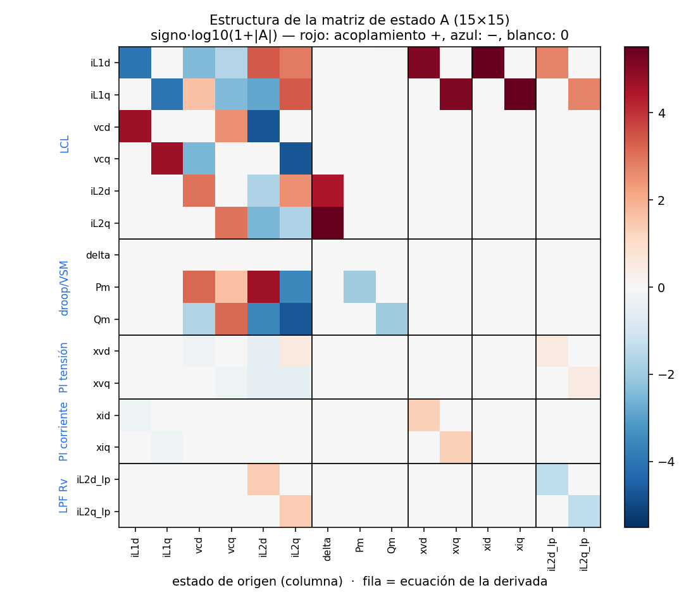
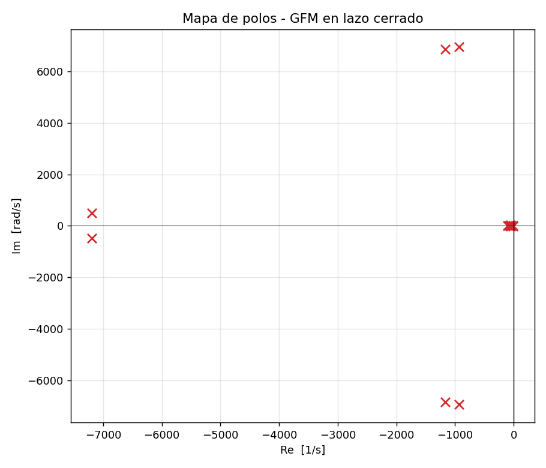
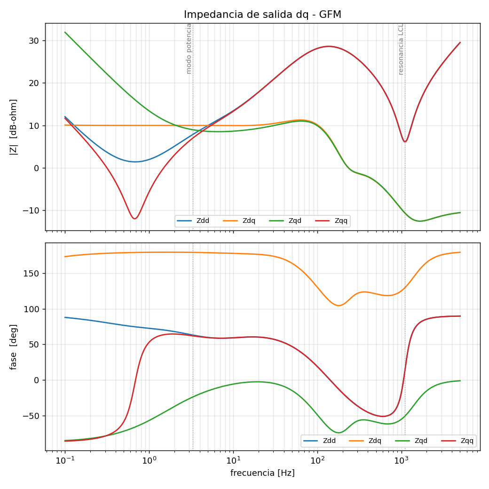
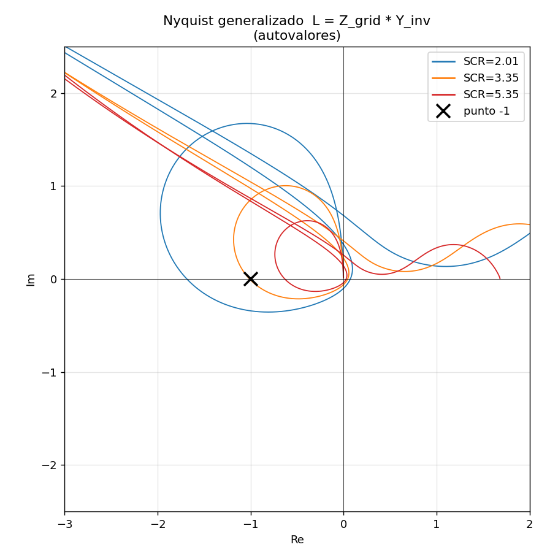
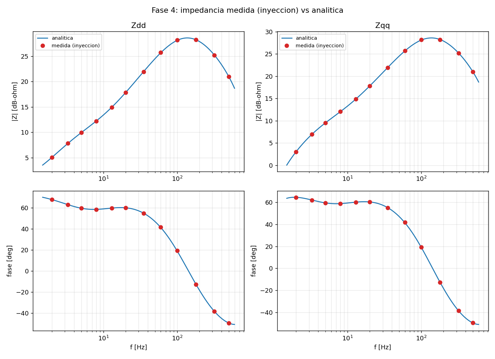
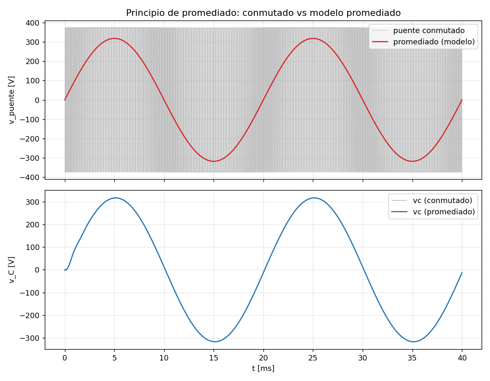
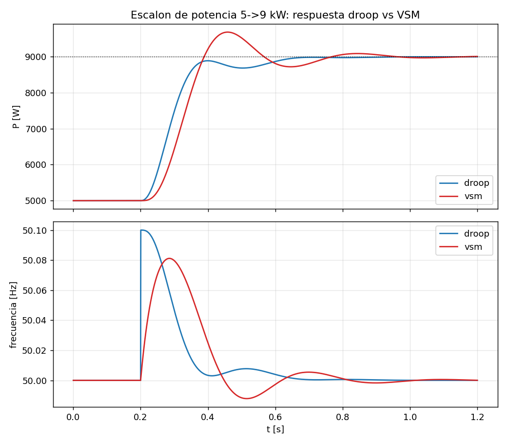
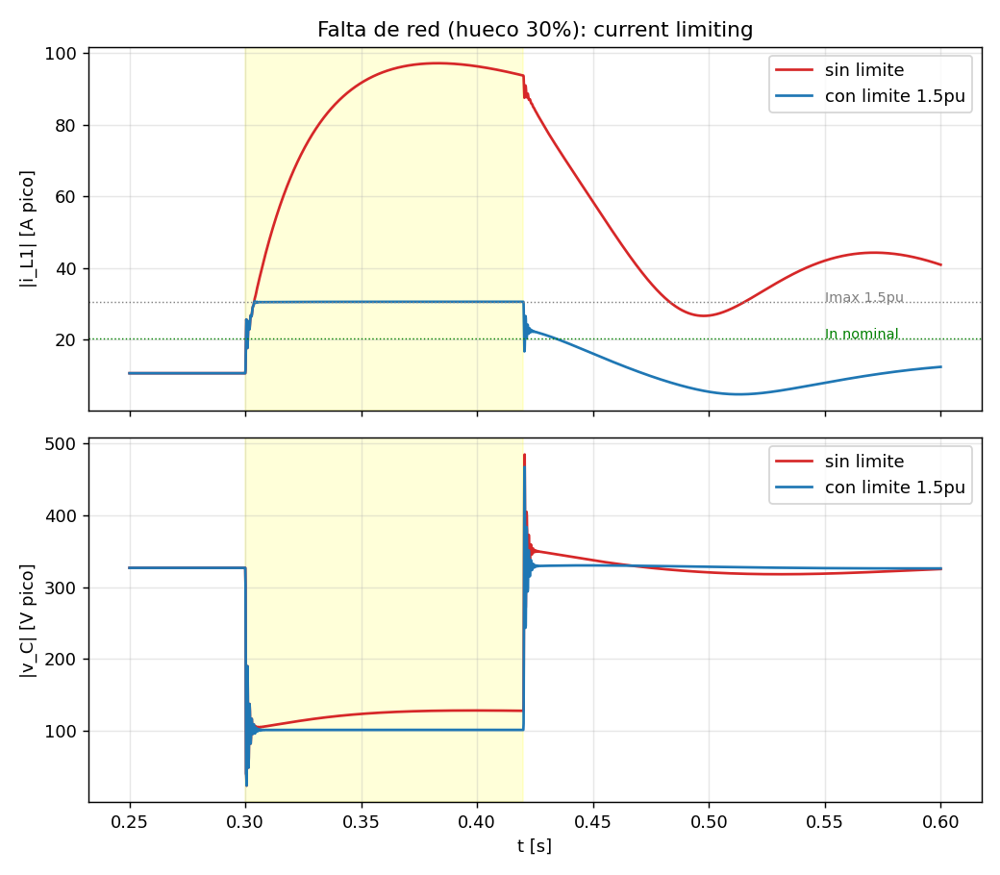
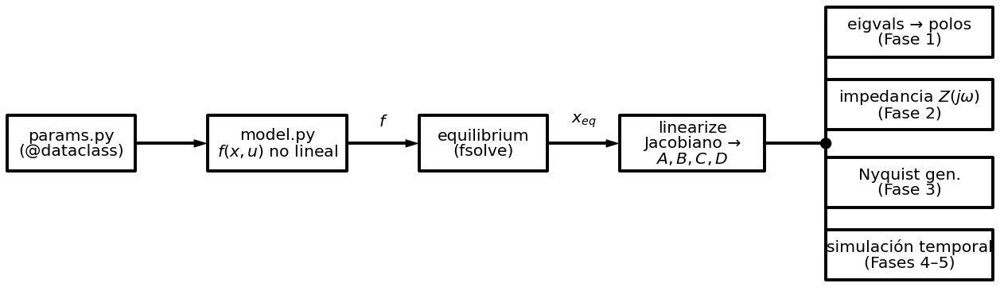

Inversor grid-forming: modelado, control y estabilidad por impedancia
Informe técnico exhaustivo — formulación física, modelo de pequeña señal de 15 estados, diseño del control, análisis de estabilidad por impedancia y validación, con el código de simulación real y sus resultados.
Resumen ejecutivo
Qué se hace, cómo, con qué código, y qué resultados reales se obtienen.
Este documento reconstruye, con detalle de tesis, el diseño y análisis completo de un
inversor formador de red (grid-forming, GFM) de 10 kVA conectado a través de un filtro
LCL. A diferencia de un resumen de resultados, aquí se explica cada decisión: por qué se elige
un modelo no lineal linealizado numéricamente, cómo se designa cada uno de los 15 estados, de dónde
sale cada ecuación, qué hace literalmente cada línea relevante del código, y qué número exacto
produce cada simulación. Todo el código mostrado es el código real del proyecto, leído de los
ficheros .py, y todos los resultados numéricos son la salida de consola
real capturada al ejecutarlos.
El hilo conductor metodológico es la doble validación: cada resultado importante se obtiene por dos vías independientes que deben coincidir. El SCR crítico se calcula por autovalores del modelo acoplado y por Nyquist de impedancia (coinciden al 1.3 %); la impedancia se obtiene analíticamente y por inyección sobre el modelo no lineal (0.21 %); el modelo promediado se contrasta con el conmutado (0.67 %). Esa concordancia es la prueba de que el método es fiable.
El segundo hilo es el proceso de iteración (capítulo 10): el primer diseño salió inestable (\( \max\mathrm{Re}=+37 \)) y el documento reconstruye el diagnóstico paso a paso hasta el diseño final estable y amortiguado, con el código de diagnóstico y sus salidas reales.
Resumen
Se presenta el modelado en pequeña señal, el diseño del control y el análisis de estabilidad por impedancia de un inversor formador de red (grid-forming) trifásico de 10 kVA con filtro LCL, conectado a una red modelada como equivalente Thévenin parametrizado por su relación de cortocircuito (SCR). El modelo no lineal en el marco \( dq \), de quince variables de estado, se obtiene escribiendo las ecuaciones físicas y linealizándolo numéricamente en torno a su punto de equilibrio mediante un Jacobiano por diferencias finitas centradas. A partir del modelo lineal se calculan los modos propios, se sintetiza la matriz de impedancia de salida \( \mathbf{Z}_{dq}(s) \) y se evalúa la estabilidad de la interacción convertidor-red con el criterio de Nyquist generalizado. La metodología se sustenta en la validación por dos vías independientes de cada resultado relevante. Se documenta además el proceso de diagnóstico que llevó de un diseño inicial inestable a uno estable y bien amortiguado, y se estudian los fenómenos de gran señal (inercia virtual y limitación de corriente) que el análisis lineal no captura.
Palabras clave: inversor grid-forming; estabilidad por impedancia; marco dq; criterio de Nyquist generalizado; impedancia virtual; máquina síncrona virtual; redes débiles; SCR.
Abstract
This work presents the small-signal modelling, control design and impedance-based stability analysis of a 10 kVA three-phase grid-forming inverter with an LCL filter, connected to a grid represented as a Thévenin equivalent parameterised by its short-circuit ratio (SCR). A fifteen-state nonlinear model in the \( dq \) frame is built from the physical equations and linearised numerically around its equilibrium point by means of a central finite-difference Jacobian. From the linear model, the modal eigenvalues are computed, the output impedance matrix \( \mathbf{Z}_{dq}(s) \) is synthesised, and the stability of the converter-grid interaction is assessed with the generalised Nyquist criterion. The methodology relies on the cross-validation of every key result through two independent routes. The diagnostic process that led from an initial unstable design to a stable, well-damped one is documented, and the large-signal phenomena (virtual inertia and current limiting) not captured by the linear analysis are studied.
Keywords: grid-forming inverter; impedance-based stability; dq frame; generalised Nyquist criterion; virtual impedance; virtual synchronous machine; weak grids; SCR.
Nomenclatura
Símbolos, subíndices y acrónimos empleados en la memoria.
Magnitudes eléctricas
| Símbolo | Significado | Unidad |
|---|---|---|
| \( \mathbf{i}_{L1} \) | corriente del inductor lado inversor (d,q) | A |
| \( \mathbf{v}_C \) | tensión del condensador de filtro (d,q) | V |
| \( \mathbf{i}_{L2}=\mathbf{i}_g \) | corriente lado red / inyectada (d,q) | A |
| \( \mathbf{v}_i \) | tensión de salida del puente | V |
| \( \mathbf{v}_{pcc} \) | tensión en el punto de conexión común | V |
| \( P,\,Q \) | potencia activa, reactiva | W, var |
| \( \delta \) | ángulo marco control − marco red | rad |
| \( \omega,\,\omega_0 \) | frecuencia del inversor, nominal | rad/s |
Parámetros
| Símbolo | Significado |
|---|---|
| \( L_1,R_1,C_f,L_2,R_2 \) | elementos del filtro LCL |
| \( R_g,L_g \) | resistencia e inductancia de red |
| \( m_p,\,n_q \) | pendientes de droop P-f, Q-V |
| \( R_v,X_v,R_{vt} \) | impedancia virtual (R, X, R transit.) |
| \( K_\text{ad} \) | ganancia de amortiguamiento activo |
| \( H,\,J,\,D \) | constante de inercia, inercia, damping VSM |
Operadores y modelo
| Símbolo | Significado |
|---|---|
| \( \mathbf{x},\mathbf{u},\mathbf{y} \) | estado, entrada, salida |
| \( \mathbf{f}(\cdot) \) | campo vectorial no lineal |
| \( A,B,C,D \) | matrices del modelo lineal |
| \( \mathbf{J} \) | \( [[0,-1],[1,0]] \), rotación 90° |
| \( \mathbf{R}(\theta) \) | matriz de rotación de ángulo \( \theta \) |
| \( \mathbf{Y}_\text{inv},\mathbf{Z}_\text{inv} \) | admitancia / impedancia de salida (2×2) |
| \( \mathbf{L}(s) \) | minor loop gain \( Z_\text{red}Y_\text{inv} \) |
| \( \lambda,\,\zeta \) | autovalor, amortiguamiento |
Acrónimos
| Sigla | Significado |
|---|---|
| GFM / GFL | grid-forming / grid-following |
| VSC | voltage source converter |
| LCL | filtro inductor-condensador-inductor |
| PLL | phase-locked loop |
| VSM | virtual synchronous machine |
| SCR | short-circuit ratio |
| PWM | pulse-width modulation |
| RoCoF | rate of change of frequency |
Convenio: negrita para vectores/matrices; magnitudes dq referidas a amplitud de pico de fase (\( V_0=V_{ll}\sqrt{2/3} \)); potencia trifásica \( P=\tfrac32(v_di_d+v_qi_q) \).
Índice, objetivos y alcance
Objetivos
- Modelar el inversor GFM en el marco dq con todas sus capas de control (cascada, impedancia virtual, amortiguamiento activo, droop) y obtener su modelo de pequeña señal.
- Diseñar el control para que sea estable y bien amortiguado, documentando el proceso de diagnóstico de la inestabilidad inicial.
- Caracterizar la impedancia de salida \( Z_{dq}(s) \) y usarla para evaluar la estabilidad de la interacción con redes de distinta fortaleza (SCR).
- Validar el modelo: la linealización (por inyección de perturbación) y el promediado (frente al modelo conmutado PWM).
- Estudiar el régimen de gran señal: inercia virtual (VSM) y limitación de corriente bajo falta.
Estructura del documento
problema, teoría, método
físico → estados → ecuaciones → código
desarrollo con código y resultados
iteración, lecciones, cierre
1 · Planteamiento del problema
Por qué un grid-forming, por qué su impedancia, y qué hay que demostrar.
1.1 Contexto: la red cambia de naturaleza
La red eléctrica tradicional se sostiene sobre máquinas síncronas: grandes masas rotantes cuya inercia física amortigua las perturbaciones y cuya tensión y frecuencia sirven de referencia a todo lo demás. La sustitución masiva de generación síncrona por convertidores de electrónica de potencia elimina esa inercia y esa referencia: la mayoría de los convertidores instalados son grid-following y dependen de que otro forme la red. Cuando la proporción de convertidores crece lo suficiente, deja de haber quién forme la tensión, y el sistema se vuelve inestable. El inversor grid-forming resuelve esto comportándose como una fuente de tensión —como una máquina síncrona— capaz de sostener la red por sí mismo. Es la tecnología clave para redes con alta penetración renovable y para microrredes.
Grid-following (GFL)
Mide el ángulo de red con una PLL e inyecta corriente: fuente de corriente controlada. Necesita una red preexistente y pierde estabilidad en red débil (SCR bajo), donde su propia corriente mueve mucho la tensión y la PLL se confunde.
Grid-forming (GFM)
Impone tensión con su propia frecuencia interna (droop o VSM): fuente de tensión detrás de una impedancia. No necesita PLL para sincronizar y es robusto en red débil. Su reto se desplaza a la limitación de corriente bajo falta.
1.2 Por qué el enfoque de impedancia
Estudiar la estabilidad re-simulando todo el sistema cada vez que cambia la red es caro y poco revelador. El enfoque de impedancia descompone el problema: el inversor se reduce a su admitancia de salida \( Y_\text{inv}(s) \) (matriz 2×2 en dq, obtenida una vez), y la red a su impedancia \( Z_\text{red}(s) \) (un parámetro: el SCR). La estabilidad del conjunto la decide el minor loop gain \( L(s)=Z_\text{red}(s)\,Y_\text{inv}(s) \) por el criterio de Nyquist generalizado. La ventaja es doble: barrer la fortaleza de red es cambiar un parámetro (no re-modelar), y el resultado es interpretable —se ve en qué frecuencia y por qué se cruza el límite.
2 · Estado del arte y marco teórico
Antecedentes en la literatura y los fundamentos matemáticos que sostienen el análisis.
2.1 Estado del arte
El control de convertidores conectados a red se organiza tradicionalmente en dos familias. Los grid-following, que siguen la tensión de red con una PLL e inyectan corriente, son la arquitectura dominante del parque renovable instalado; su limitación en redes débiles está bien documentada y se asocia a la interacción de la PLL con la impedancia de red [5],[6]. Frente a ellos, los grid-forming imponen tensión y frecuencia, emulando el comportamiento de una máquina síncrona, y son considerados habilitadores de redes con muy alta penetración de electrónica de potencia [7],[8].
Dentro del grid-forming, las estrategias de sincronización primaria más extendidas son el control por estatismo (droop) [1] y la máquina síncrona virtual (VSM/VSG) [2], que añade inercia mediante la ecuación de oscilación. Un problema recurrente del grid-forming sobre filtro LCL es la baja amortiguación del modo de sincronización cuando la reactancia de acoplamiento es pequeña; la solución canónica es la impedancia virtual [3], que emula reactancia por software sin elemento físico.
Para analizar la estabilidad de la interacción convertidor-red sin reconstruir el sistema completo, el enfoque de impedancia [4] modela cada lado como una impedancia (o admitancia) y aplica el criterio de Nyquist generalizado al producto \( \mathbf{Z}_\text{red}\mathbf{Y}_\text{inv} \). Su raíz está en el criterio de Middlebrook para convertidores DC-DC [9], extendido al dominio \( dq \) trifásico. Este trabajo se inscribe en esa línea y la aplica de extremo a extremo —del modelo físico a la validación por inyección— con verificación cruzada de cada resultado.
2.2 El marco \( dq \) y la derivación del acoplamiento cruzado
Las magnitudes trifásicas se transforman al marco \( dq \) (Park), que gira a la frecuencia de red. En régimen permanente las senoides se convierten en constantes, lo que permite control PI con error nulo en continua y linealización en torno a un punto estacionario. El precio es un acoplamiento cruzado d↔q que conviene derivar explícitamente. Sea una magnitud vectorial \( \mathbf{x}_{abc} \) que en el marco estacionario \( \alpha\beta \) es \( \mathbf{x}_s \); en el marco giratorio \( \mathbf{x}_{dq}=\mathbf{R}(-\theta)\mathbf{x}_s \) con \( \theta=\int\omega\,dt \). Derivando un elemento inductivo \( \mathbf{v}=L\,d\mathbf{i}_s/dt \) y sustituyendo \( \mathbf{i}_s=\mathbf{R}(\theta)\mathbf{i}_{dq} \):
de donde, proyectando al marco \( dq \), \( L\,d\mathbf{i}_{dq}/dt=\mathbf{v}_{dq}-\omega L\,\mathbf{J}\,\mathbf{i}_{dq} \). El término \( \omega L\mathbf{J} \) es precisamente el acoplamiento cruzado \( \pm\omega L \) que aparece en las ecuaciones de la planta (cap. 8) y que el control cancela mediante desacoplo. La misma derivación con un condensador da el término \( \omega C\mathbf{J} \).
2.3 Estabilidad por autovalores (análisis modal)
Linealizado el sistema a \( \Delta\dot{\mathbf{x}}=A\,\Delta\mathbf{x} \), su solución es combinación de modos \( e^{\lambda_i t} \). El sistema es asintóticamente estable si y solo si \( \mathrm{Re}(\lambda_i)<0\ \forall i \). De cada autovalor \( \lambda=\sigma\pm j\omega_d \) se lee la frecuencia \( f=\omega_d/2\pi \) y el amortiguamiento \( \zeta=-\sigma/|\lambda| \). Los factores de participación \( p_{ki}=\dfrac{|\phi_{ki}||\psi_{ik}|}{\sum_j|\phi_{ji}||\psi_{ij}|} \) (con \( \phi,\psi \) los autovectores derecho e izquierdo) indican qué estado \( k \) domina el modo \( i \), herramienta clave para diagnosticar qué lazo causa una inestabilidad (cap. 10).
2.4 Impedancia de salida y criterio de Nyquist generalizado
Del modelo lineal, la respuesta del puerto es \( \mathbf{G}(s)=\mathbf{C}(s\mathbf{I}-A)^{-1}\mathbf{B}+\mathbf{D} \). Con el convenio de corriente saliente, la admitancia de salida es \( \mathbf{Y}_\text{inv}=-\mathbf{G} \) y la impedancia \( \mathbf{Z}_\text{inv}=\mathbf{Y}_\text{inv}^{-1} \), matrices 2×2 por el acoplamiento d-q. Conectado el inversor (fuente Norton \( \mathbf{Y}_\text{inv} \)) a la red (\( \mathbf{Z}_\text{red} \)), la corriente de interacción contiene el factor \( (\mathbf{I}+\mathbf{Z}_\text{red}\mathbf{Y}_\text{inv})^{-1} \). La estabilidad del lazo, asumiendo subsistemas individualmente estables, equivale a que \( \mathbf{L}(s)=\mathbf{Z}_\text{red}\mathbf{Y}_\text{inv} \) cumpla el criterio de Nyquist generalizado: el locus de los autovalores de \( \mathbf{L}(j\omega) \) no debe rodear el punto \( -1 \). De forma equivalente y más cómoda de barrer numéricamente, \( \det(\mathbf{I}+\mathbf{L}(j\omega))\neq 0\ \forall\omega \): el mínimo de \( |\det(\mathbf{I}+\mathbf{L})| \) pasando por cero marca la frontera de estabilidad (cap. Fase 3).
2.5 Pequeña señal frente a gran señal
Impedancia y autovalores describen el comportamiento en pequeña señal (perturbaciones infinitesimales en torno al equilibrio, régimen lineal). En cuanto una no linealidad fuerte se activa —típicamente la saturación de corriente— el concepto de impedancia lineal pierde validez y es necesaria la simulación temporal no lineal (gran señal). Esta memoria cubre ambos regímenes: pequeña señal en las Fases 1–4, gran señal en la Fase 5.
3 · Software, herramientas y método
Todo en Python; el análisis principal se hace a mano para que sea transparente.
| Herramienta | Rol en el proyecto |
|---|---|
| Python 3.13 | Lenguaje base de todo el análisis |
| NumPy | Álgebra lineal, autovalores (linalg.eigvals), resolución de \( (sI-A)^{-1}B \) |
| SciPy | optimize.fsolve (equilibrio), integrate.solve_ivp (simulación temporal stiff, LSODA) |
| Matplotlib | Todas las figuras (mapa de polos, Bode, Nyquist, transitorios) |
| python-control | Disponible; el análisis se hace a mano para máxima transparencia |
| PLECS pendiente | Validación sobre el modelo conmutado (IGBTs, PWM) |
3.1 La decisión central: linealización numérica
Hay dos formas de obtener el modelo de pequeña señal \( (A,B,C,D) \): derivarlo a mano (exacto pero frágil ante cada cambio de control) o escribir solo las ecuaciones físicas no lineales \( f(\mathbf{x},\mathbf{u}) \) y dejar que el ordenador derive por diferencias finitas. Se elige lo segundo. El coste —resolver el equilibrio numéricamente antes de linealizar— se paga una vez; a cambio, añadir el VSM, la saturación o la impedancia virtual no obliga a rehacer ningún álgebra. Es el enfoque profesional cuando el sistema es complejo, y la columna vertebral de todo el proyecto.
4 · El sistema físico
Etapa de potencia (filtro LCL), conexión a red y control en cascada.
4.1 El filtro LCL y su resonancia
El inversor conmuta a 10 kHz; el filtro LCL atenúa los armónicos de conmutación con pendiente de −60 dB/dec (frente a −20 de un filtro L), más atenuación con menos inductancia. Su pega es una resonancia aguda con amortiguamiento casi nulo:
La simulación lo confirma con precisión: los autovalores de la resonancia LCL aparecen a 1104.7 Hz y 1089.4 Hz (Fase 1). Sin tratarla, esa resonancia desestabiliza cualquier lazo rápido; se doma con amortiguamiento activo (§4.4).
4.2 Grid-forming vs grid-following
El GFM impone tensión con su frecuencia interna (sin PLL) y es robusto en red débil; el GFL inyecta corriente siguiendo una PLL y falla en red débil. La firma de impedancia (Fase 2) lo confirma: inductiva en banda media (fase +47°…+59°), como una máquina síncrona.
4.3 Impedancia virtual: la pieza que estabiliza el lazo de potencia
Con reactancia de acoplamiento pequeña, la ganancia de sincronización \( \partial P/\partial\delta\approx 1.5\,V^2/X \) es enorme y el lazo de potencia es difícil de estabilizar (es lo que ocurrió en el primer diseño, cap. 10). La impedancia virtual emula impedancia restándola de la referencia de tensión, sin componente físico:
- La parte inductiva \( X_v \) baja \( \partial P/\partial\delta \) sin caída resistiva: estabiliza sin distorsionar el equilibrio (la caída cae en el eje q, mantenido en cero).
- La parte resistiva \( R_v \) amortigua pero su caída cae en el eje d y pelea con el droop Q-V (dispara \( Q_\text{eq} \)); por eso se usa poca \( R_v \) estática.
4.4 Amortiguamiento activo y resistencia virtual transitoria
El amortiguamiento activo realimenta la corriente del condensador (\( \mathbf{i}_{L1}-\mathbf{i}_{L2} \)) con ganancia \( K_\text{ad} \), emulando una resistencia que amortigua la resonancia LCL sin pérdidas. La resistencia virtual transitoria aplica \( R_{vt} \) solo a la componente transitoria de la corriente (vía un paso-alto): amortigua el modo de potencia sin afectar al equilibrio (en DC su efecto es cero).
4.5 Control en cascada
~3 Hz
~350 Hz
~1 kHz
Tres lazos anidados, cada interno ~3–5× más rápido que el externo. El ángulo lo genera el droop, sin PLL. El desacoplo dq cancela el acoplamiento cruzado para controlar cada eje por separado.
5 · Marcos de referencia (la clave del grid-forming)
Dos marcos giratorios y el ángulo que los acopla.
Un GFM genera su propia frecuencia, así que conviven dos marcos dq giratorios:
- Marco \( s \) (sistema/red): gira a \( \omega_0 \) constante. Es la referencia común; aquí se define el puerto con la red y se expresa la impedancia de salida.
- Marco \( c \) (control): gira a \( \omega \), la frecuencia que fija el droop. El inversor vive en este marco.
- \( \delta=\theta_c-\theta_s \) es el ángulo entre ambos, con \( \dot\delta=\omega-\omega_0 \).
La pequeña señal de \( \delta \) es lo que acopla la dinámica de potencia con la eléctrica. Una tensión de red fija en \( s \) se ve rotada por \( \delta \) desde \( c \); este término de rotación es el corazón del modelo y la fuente de los acoplamientos sutiles:
En el código (cap. 8) esto son exactamente las líneas que rotan vpcc_s a
vpcc_c con \( \cos\delta,\sin\delta \), y la salida que rota
iL2 de vuelta al marco \( s \).
6 · Designación de los 15 estados
Cuáles son, de dónde sale cada uno y por qué es estado.
Un estado es una variable cuya derivada aparece en el modelo: algo que "tiene memoria" (almacena energía o integra). Cada elemento que almacena energía (inductor, condensador) aporta un estado por eje; cada integrador del control aporta otro; el ángulo y las potencias filtradas son estados de la sincronización. Así se llega a 15:
| # | Estado | Por qué es estado | Ecuación de su derivada |
|---|---|---|---|
| 0,1 | iL1d, iL1q | corriente en \( L_1 \): la inductancia integra tensión | \( L_1\dot{\mathbf{i}}_{L1}=\mathbf{v}_i-\mathbf{v}_C-R_1\mathbf{i}_{L1}+\omega L_1\mathbf{J}\mathbf{i}_{L1} \) |
| 2,3 | vcd, vcq | tensión en \( C_f \): el condensador integra corriente | \( C_f\dot{\mathbf{v}}_C=\mathbf{i}_{L1}-\mathbf{i}_{L2}+\omega C_f\mathbf{J}\mathbf{v}_C \) |
| 4,5 | iL2d, iL2q | corriente en \( L_2 \) (= corriente a red \( i_g \)) | \( L_2\dot{\mathbf{i}}_{L2}=\mathbf{v}_C-\mathbf{v}_{pcc}-R_2\mathbf{i}_{L2}+\omega L_2\mathbf{J}\mathbf{i}_{L2} \) |
| 6 | delta | ángulo control−red: integra la diferencia de frecuencia | \( \dot\delta=\omega-\omega_0 \) |
| 7,8 | Pm, Qm | potencia filtrada: el filtro paso-bajo tiene memoria | \( \dot P_m=\omega_f(P-P_m) \) |
| 9,10 | xvd, xvq | integradores del PI de tensión | \( \dot{\mathbf{x}}_v=\mathbf{e}_v \) |
| 11,12 | xid, xiq | integradores del PI de corriente | \( \dot{\mathbf{x}}_i=\mathbf{e}_i \) |
| 13,14 | iL2d_lp, iL2q_lp | filtro paso-bajo de la R virtual transitoria | \( \dot{\mathbf{x}}=\omega_{ht}(\mathbf{i}_{L2}-\mathbf{x}) \) |
Estos nombres son literalmente la lista STATE_NAMES del código
(model.py), y el orden es el del vector de estado. El término
\( \mathbf{J}=\left[\begin{smallmatrix}0&-1\\1&0\end{smallmatrix}\right] \) es el acoplamiento cruzado
d↔q que surge al derivar en un marco giratorio.
STATE_NAMES
tiene 15 entradas (se añadieron los dos estados del filtro de la R virtual transitoria) y
NX = len(STATE_NAMES) = 15. La verdad la fija el código, no el comentario: la
Fase 1 devuelve 15 autovalores, confirmándolo.
7 · Parámetros del sistema params.py
Una sola fuente de verdad; las ganancias se derivan de los anchos de banda.
Todos los parámetros viven en una @dataclass. Lo nominal y el filtro son
datos; las ganancias de control se calculan en __post_init__ a partir
de los anchos de banda objetivo, de modo que cambiar \( f_{ci} \) o \( f_{cv} \) re-sintoniza los PI
automáticamente. La sintonía es por cancelación de polo de planta (IMC): para el lazo de
corriente, \( K_{p,i}=L_1\omega_{ci} \) y \( K_{i,i}=R_1\omega_{ci} \), de modo que el cero del PI
cancela el polo \( R_1/L_1 \) del inductor y el lazo cerrado queda como un primer orden de ancho de
banda \( \omega_{ci} \). Análogamente \( K_{p,v}=C_f\omega_{cv} \) para el lazo de tensión.
"""Parametros del inversor grid-forming y de la red.
Convenio: marco dq con amplitud de PICO de fase (no RMS).
Potencia trifasica: P = 1.5*(vd*id + vq*iq), Q = 1.5*(vq*id - vd*iq).
"""
from dataclasses import dataclass, field
import numpy as np
@dataclass
class SystemParams:
# --- Nominales ---
Sn: float = 10e3 # potencia aparente nominal [VA]
Vll: float = 400.0 # tension de linea RMS [V]
f0: float = 50.0 # frecuencia nominal [Hz]
# --- Filtro LCL ---
L1: float = 2.0e-3 # inductancia lado inversor [H]
R1: float = 0.10 # resistencia L1 [ohm]
Cf: float = 20.0e-6 # condensador de filtro [F]
L2: float = 1.0e-3 # inductancia lado red [H]
R2: float = 0.05 # resistencia L2 [ohm]
Lg: float = 0.0 # inductancia de red Thevenin [H] (0=puerto rigido)
Rg: float = 0.0 # resistencia de red Thevenin [ohm]
# --- Lazo de corriente (PI, sobre i_L1) ---
f_ci: float = 1000.0 # ancho de banda objetivo [Hz]
Kad: float = 6.0 # ganancia amortiguamiento activo LCL [ohm]
Rv: float = 0.2 # resistencia virtual estatica [ohm]
Lv: float = 8.0e-3 # inductancia virtual [H] (Xv~0.16 pu)
Rvt: float = 2.0 # resistencia virtual TRANSITORIA [ohm]
f_ht: float = 4.0 # corte del HPF de la Rv transitoria [Hz]
# --- Lazo de tension (PI, sobre v_C) ---
f_cv: float = 350.0 # ancho de banda objetivo [Hz]
# --- Droop ---
droop_p: float = 0.005 # caida de frecuencia a Sn (p.u.) -> 0.5%
droop_q: float = 0.02 # caida de tension a Sn (p.u.) -> 2%
f_pow: float = 15.0 # corte del filtro de potencia [Hz]
H_vsm: float = 4.0 # constante de inercia VSM [s]
# --- Punto de operacion ---
Pset: float = 5.0e3 # consigna de potencia activa [W]
Qset: float = 0.0 # consigna de potencia reactiva [var]
# --- Derivados (se calculan en __post_init__) ---
w0: float = field(init=False)
V0: float = field(init=False) # pico de fase nominal [V]
Kp_i: float = field(init=False)
Ki_i: float = field(init=False)
Kp_v: float = field(init=False)
Ki_v: float = field(init=False)
mp: float = field(init=False) # ganancia droop P-w [(rad/s)/W]
nq: float = field(init=False) # ganancia droop Q-V [V/var]
wf: float = field(init=False) # corte filtro potencia [rad/s]
Jvsm: float = field(init=False) # inercia VSM [kg m2 equiv]
Dvsm: float = field(init=False) # damping VSM
def __post_init__(self):
self.w0 = 2 * np.pi * self.f0
self.V0 = self.Vll * np.sqrt(2.0 / 3.0) # pico de fase
# PI corriente: ancho de banda f_ci, cero que cancela el polo de planta R1/L1
wci = 2 * np.pi * self.f_ci
self.Kp_i = self.L1 * wci
self.Ki_i = self.R1 * wci
# PI tension: ancho de banda f_cv
wcv = 2 * np.pi * self.f_cv
self.Kp_v = self.Cf * wcv
self.Ki_v = self.Cf * wcv * (wcv / 5.0)
# Droop
self.mp = (self.droop_p * self.w0) / self.Sn
self.nq = (self.droop_q * self.V0) / self.Sn
self.wf = 2 * np.pi * self.f_pow
# VSM: inercia desde H y damping ajustado para igualar el droop estacionario
self.Jvsm = 2 * self.H_vsm * self.Sn / self.w0**2
self.Dvsm = 1.0 / (self.w0 * self.mp)
8 · Modelo matemático no lineal model.py
El campo vectorial \( f(\mathbf{x},\mathbf{u}) \): física y control en 15 ecuaciones.
El método f(x,u) evalúa \( \dot{\mathbf{x}} \) para un estado y una
entrada. Se lee de arriba abajo siguiendo la cascada: primero la capa externa (droop P-ω fija
la frecuencia \( \omega \); potencia medida y filtrada), luego el droop Q-V con la impedancia
virtual y la R transitoria que arman la referencia de tensión, después los PI de tensión y de
corriente con sus desacoplos, el amortiguamiento activo, la rotación de la tensión
de red por \( \delta \), y por último la planta LCL. Cada bloque corresponde a un grupo de
estados de la tabla del cap. 6.
Las tres ecuaciones de la planta LCL (en dq, marco \( c \))
La potencia y el droop
"""Modelo no lineal del inversor grid-forming en dq, equilibrio y linealizacion.
Marcos de referencia:
- 's' (system): marco comun, gira a w0 constante. Es donde se define el puerto
de red y donde se expresa la impedancia de salida.
- 'c' (control): marco del inversor, gira a w_inv (fijada por el droop P-w).
- delta = theta_c - theta_s (acoplamiento de pequena senal del grid-forming).
Estados (13):
0 iL1d 1 iL1q corriente inductor lado inversor (marco c)
2 vcd 3 vcq tension condensador de filtro (marco c)
4 iL2d 5 iL2q corriente lado red = i_g (marco c)
6 delta angulo del marco de control
7 Pm 8 Qm potencia activa/reactiva filtrada
9 xvd 10 xvq integradores PI de tension
11 xid 12 xiq integradores PI de corriente
Entrada u (2): [vpcc_sd, vpcc_sq] tension de red en marco s.
Salida y (2): [i_g_sd, i_g_sq] corriente inyectada a red en marco s.
"""
import numpy as np
from scipy.optimize import fsolve
STATE_NAMES = ["iL1d", "iL1q", "vcd", "vcq", "iL2d", "iL2q",
"delta", "Pm", "Qm", "xvd", "xvq", "xid", "xiq",
"iL2d_lp", "iL2q_lp"]
NX = len(STATE_NAMES)
class GFMInverter:
def __init__(self, p, opts=None):
self.p = p
# Flags de diagnostico (default = comportamiento base)
o = {"w_decouple": "wctrl", # 'wctrl' usa w del droop, 'w0' usa w0 fijo
"ff_load": False, # feedforward de carga iL2 (desestabiliza: off)
"active_damping": True} # amortiguamiento activo LCL (corriente Cf)
if opts:
o.update(opts)
self.o = o
# ------------------------------------------------------------------ #
def f(self, x, u):
"""Campo vectorial dx/dt = f(x,u)."""
p = self.p
(iL1d, iL1q, vcd, vcq, iL2d, iL2q,
delta, Pm, Qm, xvd, xvq, xid, xiq,
iL2d_lp, iL2q_lp) = x
vpcc_sd, vpcc_sq = u
# --- Droop P-w: frecuencia del inversor ---
w = p.w0 + p.mp * (p.Pset - Pm)
wd = p.w0 if self.o["w_decouple"] == "w0" else w # w para desacoplos/planta
ffl = 1.0 if self.o["ff_load"] else 0.0
# --- Potencia medida en el punto de control (vc, i_g) ---
P = 1.5 * (vcd * iL2d + vcq * iL2q)
Q = 1.5 * (vcq * iL2d - vcd * iL2q)
dPm = p.wf * (P - Pm)
dQm = p.wf * (Q - Qm)
# --- Droop Q-V: referencia de tension (alineada al eje d de 'c') ---
Vref = p.V0 + p.nq * (p.Qset - Qm)
# Impedancia virtual Zv = Rv + jXv (caida segun corriente de red, marco dq)
# + resistencia virtual TRANSITORIA Rvt sobre la corriente filtrada paso-alto
# (cero en DC: amortigua sin distorsionar el equilibrio)
wht = 2 * np.pi * p.f_ht
iL2d_hp = iL2d - iL2d_lp
iL2q_hp = iL2q - iL2q_lp
vvirt_d = p.Rv * iL2d - wd * p.Lv * iL2q + p.Rvt * iL2d_hp
vvirt_q = p.Rv * iL2q + wd * p.Lv * iL2d + p.Rvt * iL2q_hp
vcref_d = Vref - vvirt_d
vcref_q = 0.0 - vvirt_q
diL2d_lp = wht * (iL2d - iL2d_lp)
diL2q_lp = wht * (iL2q - iL2q_lp)
# --- Lazo de tension (PI) -> referencia de corriente de L1 ---
ev_d = vcref_d - vcd
ev_q = vcref_q - vcq
dxvd, dxvq = ev_d, ev_q
iL1ref_d = p.Kp_v * ev_d + p.Ki_v * xvd - wd * p.Cf * vcq + ffl * iL2d
iL1ref_q = p.Kp_v * ev_q + p.Ki_v * xvq + wd * p.Cf * vcd + ffl * iL2q
# --- Lazo de corriente (PI) -> tension de salida del puente ---
ei_d = iL1ref_d - iL1d
ei_q = iL1ref_q - iL1q
dxid, dxiq = ei_d, ei_q
vid = p.Kp_i * ei_d + p.Ki_i * xid - wd * p.L1 * iL1q + vcd
viq = p.Kp_i * ei_q + p.Ki_i * xiq + wd * p.L1 * iL1d + vcq
# --- Amortiguamiento activo LCL: resistencia virtual via corriente de Cf ---
if self.o["active_damping"]:
vid -= p.Kad * (iL1d - iL2d)
viq -= p.Kad * (iL1q - iL2q)
# --- Tension de red rotada al marco de control: vpcc_c = R(-delta) vpcc_s ---
cd, sd = np.cos(delta), np.sin(delta)
vpcc_cd = cd * vpcc_sd + sd * vpcc_sq
vpcc_cq = -sd * vpcc_sd + cd * vpcc_sq
# --- Planta LCL (marco c, girando a w) ---
diL1d = (vid - vcd - p.R1 * iL1d + w * p.L1 * iL1q) / p.L1
diL1q = (viq - vcq - p.R1 * iL1q - w * p.L1 * iL1d) / p.L1
dvcd = (iL1d - iL2d + w * p.Cf * vcq) / p.Cf
dvcq = (iL1q - iL2q - w * p.Cf * vcd) / p.Cf
# Red Thevenin en serie (Lg,Rg): cuando son 0, puerto rigido (Fase 1/2)
L2t = p.L2 + p.Lg
R2t = p.R2 + p.Rg
diL2d = (vcd - vpcc_cd - R2t * iL2d + w * L2t * iL2q) / L2t
diL2q = (vcq - vpcc_cq - R2t * iL2q - w * L2t * iL2d) / L2t
# --- Angulo del marco de control ---
ddelta = w - p.w0 # la red 's' gira a w0
return np.array([diL1d, diL1q, dvcd, dvcq, diL2d, diL2q,
ddelta, dPm, dQm, dxvd, dxvq, dxid, dxiq,
diL2d_lp, diL2q_lp])
# ------------------------------------------------------------------ #
def output(self, x, u):
"""Salida del puerto: corriente a red en marco s, i_g_s = R(delta) i_g_c."""
delta = x[6]
iL2d, iL2q = x[4], x[5]
cd, sd = np.cos(delta), np.sin(delta)
i_sd = cd * iL2d - sd * iL2q
i_sq = sd * iL2d + cd * iL2q
return np.array([i_sd, i_sq])
# ------------------------------------------------------------------ #
def equilibrium(self, u):
"""Resuelve f(x,u)=0. Devuelve (x_eq, info)."""
p = self.p
Vg = u[0]
# Guess fisico a partir de la consigna de potencia
iL2d0 = p.Pset / (1.5 * Vg)
iL2q0 = -p.Qset / (1.5 * Vg)
x0 = np.zeros(NX)
x0[0] = iL2d0 - p.w0 * p.Cf * 0.0 # iL1d ~ iL2d
x0[1] = iL2q0 + p.w0 * p.Cf * Vg # iL1q ~ iL2q + corriente del Cf
x0[2] = Vg # vcd
x0[3] = 0.0 # vcq
x0[4] = iL2d0
x0[5] = iL2q0
x0[6] = 0.05 # delta inicial
x0[7] = p.Pset # Pm
x0[8] = p.Qset # Qm
x0[13] = iL2d0 # iL2d_lp ~ iL2d
x0[14] = iL2q0 # iL2q_lp ~ iL2q
x_eq, info, ier, msg = fsolve(lambda x: self.f(x, u), x0,
full_output=True, xtol=1e-12)
res = np.linalg.norm(self.f(x_eq, u))
return x_eq, {"ier": ier, "msg": msg, "residual": res}
# ------------------------------------------------------------------ #
def linearize(self, x_eq, u_eq, eps=1e-6):
"""Linealizacion numerica (diferencias centradas) -> A,B,C,D."""
n, m, q = NX, len(u_eq), 2
A = np.zeros((n, n)); B = np.zeros((n, m))
C = np.zeros((q, n)); D = np.zeros((q, m))
f0 = self.f(x_eq, u_eq)
for j in range(n):
dx = eps * max(1.0, abs(x_eq[j]))
xp = x_eq.copy(); xp[j] += dx
xm = x_eq.copy(); xm[j] -= dx
A[:, j] = (self.f(xp, u_eq) - self.f(xm, u_eq)) / (2 * dx)
C[:, j] = (self.output(xp, u_eq) - self.output(xm, u_eq)) / (2 * dx)
for j in range(m):
du = eps * max(1.0, abs(u_eq[j]))
up = u_eq.copy(); up[j] += du
um = u_eq.copy(); um[j] -= du
B[:, j] = (self.f(x_eq, up) - self.f(x_eq, um)) / (2 * du)
D[:, j] = (self.output(x_eq, up) - self.output(x_eq, um)) / (2 * du)
return A, B, C, D
vpcc_cd = cd*vpcc_sd + sd*vpcc_sq implementa
\( \mathbf{R}(-\delta) \); la salida output() aplica \( \mathbf{R}(+\delta) \)
para devolver la corriente al marco \( s \). La red Thévenin en serie aparece como
L2t = L2 + Lg, R2t = R2 + Rg: con
\( L_g=R_g=0 \) el puerto es rígido (Fases 1–2); con valores no nulos, red débil (Fase 3).9 · Equilibrio y linealización
Cómo se halla \( \mathbf{x}_e \) y cómo se obtiene \( (A,B,C,D) \).
9.1 El punto de equilibrio
Antes de linealizar hay que resolver \( f(\mathbf{x}_e,\mathbf{u}_e)=0 \). El método
equilibrium() construye una estimación física a partir de la consigna
(corrientes que dan \( P_\text{set} \), tensión nominal, ángulo pequeño) y la refina con
fsolve (tolerancia \( 10^{-12} \)). Un buen guess es clave: con uno arbitrario
el solver puede no converger o caer en una solución no física. La Fase 1 confirma residual
\( \approx 9.7\times10^{-11} \) y \( P_\text{eq}=5000 \) W exactos.
9.2 La linealización por diferencias centradas
Cada columna de \( A \) es \( \partial f/\partial x_j \), aproximada perturbando el estado \( j \)
arriba y abajo y dividiendo por \( 2\Delta x_j \). Las diferencias centradas dan error
\( O(\Delta x^2) \) (no \( O(\Delta x) \)); el paso se escala con la magnitud del estado
(eps*max(1,|x|)) porque corrientes de decenas de A y ángulos de fracciones de
rad no admiten el mismo paso absoluto. La misma idea da \( B \) (perturbando \( u \)), \( C \) y
\( D \) (perturbando la salida).
9.3 Validación previa obligatoria
Antes de creerse nada: (1) residual del equilibrio \( \approx 10^{-10} \); (2) signo de \( \partial P/\partial\delta>0 \) (físico: más ángulo → más potencia en línea inductiva); (3) la resonancia LCL aparece a ~1.1 kHz. Las tres cuadran, luego el modelo es fiable.
9.4 Derivación de la sensibilidad potencia-ángulo
La ganancia del lazo de sincronización —y, por tanto, la raíz de la inestabilidad del primer diseño (cap. 10)— es \( \partial P/\partial\delta \). Para una fuente de tensión \( V \) detrás de una reactancia \( X \) conectada a una red \( E \), la potencia activa transmitida es la conocida ecuación de transferencia:
Con \( V\approx E\approx V_0 \) y considerando la potencia trifásica (factor \( \tfrac32 \) en amplitud de pico), la sensibilidad en torno al punto de operación es del orden de \( \partial P/\partial\delta\sim 1.5\,V_0^2/X \). El término clave es \( 1/X \): si la reactancia de acoplamiento \( X \) es pequeña, la ganancia es enorme, el lazo de potencia cruza con poco margen de fase y el sistema tiende a la inestabilidad. La medición numérica sobre el modelo da \( \partial P/\partial\delta=+127 \) kW/rad (positivo y físico). Esta fórmula explica cuantitativamente por qué la impedancia virtual inductiva —que aumenta \( X \) por software— es la cura: reduce \( \partial P/\partial\delta \) y devuelve margen de fase al lazo, sin distorsionar el equilibrio (su caída cae en el eje q).
Fase 1 · Modelo y estabilidad
Equilibrio, linealización, autovalores y mapa de polos.
1.1 Objetivo y método
Demostrar que el diseño es estable e identificar sus modos. El script construye el modelo, resuelve el equilibrio, linealiza, calcula los autovalores ordenados de menos a más estable, y dibuja el mapa de polos. Para cada autovalor imprime frecuencia \( f=|\mathrm{Im}|/2\pi \) y amortiguamiento \( \zeta=-\mathrm{Re}/|\lambda| \).
"""Fase 1: equilibrio, linealizacion y mapa de polos del inversor grid-forming."""
import os, sys
sys.path.insert(0, os.path.dirname(os.path.abspath(__file__)))
import numpy as np
import matplotlib
matplotlib.use("Agg")
import matplotlib.pyplot as plt
from params import SystemParams
from model import GFMInverter, STATE_NAMES
p = SystemParams()
gfm = GFMInverter(p)
# --- Punto de operacion: red rigida nominal en eje d del marco s ---
u_eq = np.array([p.V0, 0.0])
x_eq, info = gfm.equilibrium(u_eq)
P_eq = 1.5 * (x_eq[2] * x_eq[4] + x_eq[3] * x_eq[5])
Q_eq = 1.5 * (x_eq[3] * x_eq[4] - x_eq[2] * x_eq[5])
print("=" * 60)
print("FASE 1 - Inversor grid-forming")
print("=" * 60)
print(f"Equilibrio: ier={info['ier']} residual={info['residual']:.2e}")
print(f" P_eq = {P_eq:8.1f} W (consigna {p.Pset:.0f} W)")
print(f" Q_eq = {Q_eq:8.1f} var (consigna {p.Qset:.0f} var)")
print(f" delta = {np.degrees(x_eq[6]):.2f} deg")
print(f" |vc| = {np.hypot(x_eq[2], x_eq[3]):.1f} V (pico fase, nominal {p.V0:.1f})")
# --- Linealizacion ---
A, B, C, D = gfm.linearize(x_eq, u_eq)
eig = np.linalg.eigvals(A)
order = np.argsort(-eig.real) # de menos a mas estable
eig = eig[order]
print("\nAutovalores (parte real, parte imag, f[Hz], zeta):")
for lam in eig:
f_hz = abs(lam.imag) / (2 * np.pi)
zeta = -lam.real / abs(lam) if abs(lam) > 0 else 1.0
print(f" {lam.real:>12.2f} {lam.imag:>+12.2f}j f={f_hz:8.1f} Hz zeta={zeta:+.3f}")
stable = np.all(eig.real < 0)
print(f"\nSistema {'ESTABLE' if stable else 'INESTABLE'} "
f"(max Re = {eig.real.max():.2f})")
# --- Mapa de polos ---
outdir = os.path.join(os.path.dirname(os.path.abspath(__file__)), "results")
os.makedirs(outdir, exist_ok=True)
fig, ax = plt.subplots(figsize=(7, 6))
ax.scatter(eig.real, eig.imag, marker="x", s=70, c="C3")
ax.axvline(0, color="k", lw=0.8)
ax.axhline(0, color="k", lw=0.5)
ax.set_xlabel("Re [1/s]"); ax.set_ylabel("Im [rad/s]")
ax.set_title("Mapa de polos - GFM en lazo cerrado")
ax.grid(True, alpha=0.3)
fig.tight_layout()
fig.savefig(os.path.join(outdir, "polos_fase1.png"), dpi=130)
print(f"\nFigura guardada en results/polos_fase1.png")
1.2 Resultados reales

1.3 Lectura de los modos
El espectro se separa en familias, confirmando la separación temporal de la cascada:
- Resonancia LCL a 1104.7 y 1089.4 Hz (\( \zeta\approx 0.13\text{–}0.17 \)): el filtro, amortiguado por \( K_\text{ad} \).
- Lazo de corriente a 77.5 Hz (\( \zeta=0.998 \), casi crítico).
- Modos reales rápidos a −50, −87, −100 (lazo de tensión e integradores).
- Modo de potencia a 3.3 Hz con \( \zeta=0.40 \): el más lento y el crítico, el equivalente al modo electromecánico de una máquina síncrona.
Equilibrio: \( P=5000 \) W exactos, \( Q=-554 \) var (físico: lo consume la impedancia virtual y el filtro), \( \delta=5.11° \), \( |v_C|=326.7 \) V ≈ nominal. ESTABLE \( \max\mathrm{Re}=-8.32 \).
Fase 2 · Impedancia de salida Z(s)
La huella dinámica del inversor vista desde la red.
2.1 Cómo se calcula
Del modelo linealizado, la respuesta en frecuencia es
\( G(s)=C(sI-A)^{-1}B+D=\partial \mathbf{i}_g/\partial \mathbf{v}_{pcc} \). Por el convenio de signos
(corriente saliente hacia la red), la admitancia de salida es \( Y=-G \) y la impedancia
\( Z=Y^{-1} \), una matriz 2×2 en dq. El módulo impedance.py lo implementa;
nótese el uso de np.linalg.solve(sI-A, B) en vez de invertir \( (sI-A) \)
explícitamente (más estable y rápido).
"""Impedancia/admitancia de salida dq del inversor a partir del modelo linealizado.
Convencion de signos:
El modelo tiene u = v_pcc (tension impuesta en el puerto, marco s)
y = i_g (corriente inyectada hacia la red, marco s)
G(s) = C(sI-A)^-1 B + D = d i_g / d v_pcc.
Vista de fuente (Norton): i_g = i_auto - Y_inv * v_pcc => Y_inv = -G(s).
Impedancia de salida: Z_inv(s) = Y_inv(s)^-1 (matriz 2x2 en dq).
"""
import numpy as np
from params import SystemParams
from model import GFMInverter
def build_linear(p, opts=None):
"""Construye (A,B,C,D, x_eq) en el punto de operacion nominal."""
g = GFMInverter(p, opts)
u = np.array([p.V0, 0.0])
x_eq, info = g.equilibrium(u)
if info["residual"] > 1e-6:
raise RuntimeError(f"equilibrio no converge (res={info['residual']:.1e})")
A, B, C, D = g.linearize(x_eq, u)
return A, B, C, D, x_eq
def admittance(A, B, C, D, freqs_hz):
"""Y_inv(jw) para cada frecuencia [Hz]. Devuelve array (N,2,2) complejo."""
n = A.shape[0]
I = np.eye(n)
Y = np.zeros((len(freqs_hz), 2, 2), dtype=complex)
for k, f in enumerate(freqs_hz):
s = 2j * np.pi * f
G = C @ np.linalg.solve(s * I - A, B) + D # d i_g / d v_pcc
Y[k] = -G # admitancia de salida
return Y
def impedance(A, B, C, D, freqs_hz):
"""Z_inv(jw) = Y_inv(jw)^-1. Devuelve array (N,2,2) complejo."""
Y = admittance(A, B, C, D, freqs_hz)
Z = np.zeros_like(Y)
for k in range(len(freqs_hz)):
Z[k] = np.linalg.inv(Y[k])
return Z
if __name__ == "__main__":
p = SystemParams()
A, B, C, D, _ = build_linear(p)
f = np.array([1.0, 10.0, 100.0, 1000.0])
Z = impedance(A, B, C, D, f)
print("Z_dd(jw) (magnitud ohm) en 1/10/100/1000 Hz:")
for k, ff in enumerate(f):
print(f" {ff:6.0f} Hz: |Zdd|={abs(Z[k,0,0]):7.3f} |Zqq|={abs(Z[k,1,1]):7.3f}")
El driver de la fase barre 0.1 Hz–5 kHz y dibuja las cuatro componentes \( Z_{dd},Z_{dq},Z_{qd},Z_{qq} \) en Bode, marcando el modo de potencia y la resonancia LCL:
"""Fase 2: impedancia de salida dq Z(jw) del inversor grid-forming."""
import os, sys
sys.path.insert(0, os.path.dirname(os.path.abspath(__file__)))
import numpy as np
import matplotlib
matplotlib.use("Agg")
import matplotlib.pyplot as plt
from params import SystemParams
from impedance import build_linear, impedance
p = SystemParams()
A, B, C, D, x_eq = build_linear(p)
f = np.logspace(-1, np.log10(5e3), 600) # 0.1 Hz .. 5 kHz
Z = impedance(A, B, C, D, f)
comp = [(0, 0, "Zdd"), (0, 1, "Zdq"), (1, 0, "Zqd"), (1, 1, "Zqq")]
fig, axes = plt.subplots(2, 1, figsize=(8, 8), sharex=True)
for i, j, name in comp:
mag = 20 * np.log10(np.abs(Z[:, i, j]) + 1e-12)
ph = np.degrees(np.angle(Z[:, i, j]))
axes[0].semilogx(f, mag, label=name)
axes[1].semilogx(f, ph, label=name)
# marcar el modo de potencia (~3.3 Hz) y la resonancia LCL (~1.1 kHz)
for fx, txt in [(3.3, "modo potencia"), (1100, "resonancia LCL")]:
for ax in axes:
ax.axvline(fx, color="gray", ls=":", lw=0.8)
axes[0].annotate(txt, xy=(fx, axes[0].get_ylim()[1]), fontsize=8,
rotation=90, va="top", ha="right", color="gray")
axes[0].set_ylabel("|Z| [dB-ohm]"); axes[0].grid(True, which="both", alpha=0.3)
axes[0].legend(ncol=4, fontsize=8); axes[0].set_title("Impedancia de salida dq - GFM")
axes[1].set_ylabel("fase [deg]"); axes[1].set_xlabel("frecuencia [Hz]")
axes[1].grid(True, which="both", alpha=0.3); axes[1].legend(ncol=4, fontsize=8)
fig.tight_layout()
outdir = os.path.join(os.path.dirname(os.path.abspath(__file__)), "results")
os.makedirs(outdir, exist_ok=True)
fig.savefig(os.path.join(outdir, "impedancia_fase2.png"), dpi=130)
# Resumen numerico
print("Impedancia de salida dq (Z_inv = Y_inv^-1):")
print(f"{'f[Hz]':>8} {'|Zdd|':>8} {'/_Zdd':>7} {'|Zqq|':>8} {'/_Zqq':>7}")
for ff in [0.1, 1, 3.3, 10, 50, 100, 1000, 1100]:
k = np.argmin(np.abs(f - ff))
zdd, zqq = Z[k, 0, 0], Z[k, 1, 1]
print(f"{f[k]:8.1f} {abs(zdd):8.3f} {np.degrees(np.angle(zdd)):7.1f} "
f"{abs(zqq):8.3f} {np.degrees(np.angle(zqq)):7.1f}")
print("\nFigura: results/impedancia_fase2.png")
2.2 Resultados reales

La impedancia es inductiva en banda media: la fase de \( Z_{dd} \) y \( Z_{qq} \) está entre +47° (50 Hz) y +59° (10 Hz), la firma de una fuente de tensión detrás de impedancia (grid-forming). El módulo crece con la frecuencia en esa banda (\( |Z|=16.7 \) Ω a 50 Hz), como una inductancia. Cerca de la resonancia LCL (~1.1 kHz) la fase cambia de signo. El pico del modo de potencia (3.3 Hz) no es agudo, gracias a \( \zeta=0.40 \): un pico agudo aquí avisaría de riesgo de oscilación con la red.
2.3 Por qué matriz 2×2
Los términos fuera de la diagonal (\( Z_{dq},Z_{qd} \)) miden el acoplamiento d↔q; no son despreciables en un GFM. Ignorarlos daría una predicción de estabilidad errónea: por eso la Fase 3 usa Nyquist generalizado (autovalores de una matriz), no SISO.
Fase 3 · Estabilidad en red débil
Nyquist generalizado, validado contra el modelo acoplado.
3.1 La red Thévenin grid.py
La red se parametriza por SCR y X/R. De \( \mathrm{SCR}=V_{ll}^2/(|Z_g|S_n) \) se obtiene \( |Z_g| \), y de X/R se reparten \( R_g \) y \( L_g \). Su impedancia en dq es la de un inductor con acoplamiento cruzado \( \omega_0 L_g \):
"""Red Thevenin en dq parametrizada por SCR y X/R."""
import numpy as np
def grid_params(scr, xr, p):
"""Devuelve (Rg, Lg) de la red para un SCR y X/R dados.
SCR = S_cc/Sn, S_cc = Vll^2/|Zg| => |Zg| = Vll^2/(SCR*Sn).
"""
Zg = p.Vll**2 / (scr * p.Sn)
Rg = Zg / np.sqrt(1.0 + xr**2)
Xg = Rg * xr
Lg = Xg / p.w0
return Rg, Lg
def grid_impedance_dq(Rg, Lg, w0, freqs_hz):
"""Z_grid(jw) en dq (2x2) de un inductor R+jX con acoplamiento cruzado w0*Lg."""
Z = np.zeros((len(freqs_hz), 2, 2), dtype=complex)
for k, f in enumerate(freqs_hz):
s = 2j * np.pi * f
Z[k] = np.array([[Rg + s * Lg, -w0 * Lg],
[w0 * Lg, Rg + s * Lg]])
return Z
3.2 Las dos vías y el código
El driver usa un control agresivo (droop alto, sin amortiguamiento transitorio) que sí pierde estabilidad, para ilustrar el criterio. Calcula el SCR crítico por (A) bisección sobre el \( \max\mathrm{Re} \) del modelo acoplado, y por (B) el mínimo de \( |\det(I+Z_\text{red}Y_\text{inv})| \) (Nyquist de impedancia). Ambos deben coincidir.
"""Fase 3: estabilidad en red debil por impedancia (Nyquist generalizado).
Compara dos vias para hallar el SCR critico:
(A) Autovalores del modelo acoplado inversor+red (verdad de referencia).
(B) Criterio de impedancia: Nyquist generalizado de L = Z_grid * Y_inv.
Si el modelado es correcto, ambos coinciden.
Se usa un control "agresivo" (droop alto, sin amortiguamiento transitorio) que
SI pierde estabilidad en red fuerte, para ilustrar el criterio.
"""
import os, sys
sys.path.insert(0, os.path.dirname(os.path.abspath(__file__)))
import numpy as np
import matplotlib
matplotlib.use("Agg")
import matplotlib.pyplot as plt
from params import SystemParams
from model import GFMInverter
from impedance import build_linear, admittance
from grid import grid_params, grid_impedance_dq
CFG = dict(droop_p=0.03, droop_q=0.05, Lv=2e-3, Rvt=0.0, Rv=0.0, f_cv=250)
XR = 5.0
def coupled_maxre(scr):
p0 = SystemParams(**CFG)
Rg, Lg = grid_params(scr, XR, p0)
p = SystemParams(Rg=Rg, Lg=Lg, **CFG)
g = GFMInverter(p)
u = np.array([p.V0, 0.0])
x, r = g.equilibrium(u)
if r["residual"] > 1e-6:
return np.nan
return np.linalg.eigvals(g.linearize(x, u)[0]).real.max()
# (A) SCR critico por biseccion sobre el modelo acoplado
lo, hi = 2.0, 6.0
for _ in range(40):
mid = 0.5 * (lo + hi)
(lo, hi) = (mid, hi) if coupled_maxre(mid) < 0 else (lo, mid)
scr_crit_coupled = 0.5 * (lo + hi)
print(f"(A) SCR critico (modelo acoplado) = {scr_crit_coupled:.3f}")
# (B) Nyquist generalizado: Y_inv del inversor SOLO (sin red)
p_inv = SystemParams(**CFG)
A, B, C, D, _ = build_linear(p_inv)
f = np.logspace(-1, 3.5, 2000)
Y = admittance(A, B, C, D, f)
def loop_eigs(scr):
"""Autovalores de L(jw) = Z_grid * Y_inv para cada frecuencia."""
Rg, Lg = grid_params(scr, XR, p_inv)
Zg = grid_impedance_dq(Rg, Lg, p_inv.w0, f)
lam = np.zeros((len(f), 2), dtype=complex)
for k in range(len(f)):
lam[k] = np.linalg.eigvals(Zg[k] @ Y[k])
return lam
# SCR critico por criterio de impedancia: donde el locus toca -1
# (min sobre w de |det(I + Z_grid Y_inv)| pasa por 0)
def min_dist_to_crit(scr):
Rg, Lg = grid_params(scr, XR, p_inv)
Zg = grid_impedance_dq(Rg, Lg, p_inv.w0, f)
d = []
for k in range(len(f)):
L = Zg[k] @ Y[k]
d.append(abs(np.linalg.det(np.eye(2) + L)))
return min(d)
# barrido para localizar el minimo de la distancia critica
scrs = np.linspace(2.5, 5.0, 60)
dmin = [min_dist_to_crit(s) for s in scrs]
scr_crit_imp = scrs[int(np.argmin(dmin))]
print(f"(B) SCR critico (Nyquist impedancia) = {scr_crit_imp:.3f}")
print(f" diferencia = {abs(scr_crit_imp-scr_crit_coupled):.3f}")
# --- Figura: Nyquist generalizado a 3 SCR ---
fig, ax = plt.subplots(figsize=(7, 7))
for scr, col in [(scr_crit_coupled*0.6, "C0"),
(scr_crit_coupled, "C1"),
(scr_crit_coupled*1.6, "C3")]:
lam = loop_eigs(scr)
for j in range(2):
ax.plot(lam[:, j].real, lam[:, j].imag, col, lw=1.0)
ax.plot(np.nan, np.nan, col, label=f"SCR={scr:.2f}")
ax.plot(-1, 0, "kx", ms=12, mew=2, label="punto -1")
ax.set_xlim(-3, 2); ax.set_ylim(-2.5, 2.5)
ax.axhline(0, color="k", lw=0.4); ax.axvline(0, color="k", lw=0.4)
ax.set_xlabel("Re"); ax.set_ylabel("Im")
ax.set_title("Nyquist generalizado L = Z_grid * Y_inv\n(autovalores)")
ax.legend(); ax.grid(True, alpha=0.3); ax.set_aspect("equal")
fig.tight_layout()
outdir = os.path.join(os.path.dirname(os.path.abspath(__file__)), "results")
os.makedirs(outdir, exist_ok=True)
fig.savefig(os.path.join(outdir, "nyquist_fase3.png"), dpi=130)
print("\nFigura: results/nyquist_fase3.png")
print("Interpretacion: al crecer SCR (red mas fuerte) el locus envuelve -1 -> inestable.")
3.3 Resultados reales

| Método | SCR crítico |
|---|---|
| (A) Autovalores del modelo acoplado | 3.347 |
| (B) Nyquist de Z_red·Y_inv | 3.390 |
| Diferencia 0.043 → 1.3 % | |
Fase 4 · Validación
Medir la impedancia como en PLECS/hardware, y justificar el promediado.
4.1 Medición por inyección inject.py
Esta es la técnica que se programa en un banco real: inyectar una perturbación senoidal de tensión a frecuencia \( f_p \), primero en d y luego en q (dos experimentos, por ser MIMO 2×2), simular hasta régimen permanente, y extraer los fasores por demodulación (correlación con sin/cos sobre periodos enteros). Con las dos columnas se monta \( I=G\,V \) y se despeja \( G=I\,V^{-1} \), \( Y=-G \), \( Z=Y^{-1} \). La "planta" aquí es el modelo no lineal (simulate.py), así que comparar con el \( Z \) analítico valida la linealización.
"""Medicion de impedancia de salida dq por inyeccion de perturbacion.
Esta es la tecnica que se programa en PLECS o en un banco de ensayo real:
1. En el punto de operacion, inyectar una pequena perturbacion senoidal de tension
en el puerto, a frecuencia f_p, primero en el eje d y luego en el eje q.
2. Simular hasta regimen permanente y medir v_pcc(t) e i_g(t).
3. Extraer los fasores a f_p por demodulacion (correlacion con sin/cos sobre
periodos enteros).
4. Como es un sistema MIMO 2x2, dos inyecciones independientes (d y q) permiten
identificar la matriz completa: I = G * V -> G = I * V^-1.
Admitancia de salida Y = -G ; Z = Y^-1.
Aqui la "planta" es el modelo no lineal (simulate.rhs). Comparar el Z medido con el
Z analitico (impedance.py) valida la linealizacion y demuestra el metodo.
"""
import numpy as np
from scipy.integrate import solve_ivp
from simulate import rhs, initial_state
def _phasor(t, x, fp):
"""Fasor complejo de x(t) a frecuencia fp, por correlacion sobre la ventana.
La ventana debe cubrir un numero entero de periodos para exactitud."""
w = 2 * np.pi * fp
# coeficientes de Fourier (proyeccion ortogonal)
c = np.trapz(x * np.cos(w * t), t)
s = np.trapz(x * np.sin(w * t), t)
T = t[-1] - t[0]
return (2.0 / T) * (c - 1j * s)
def measure_point(p, fp, amp, axis, n_settle=8, n_meas=6, ilim=None):
"""Una inyeccion a frecuencia fp en 'd' o 'q'. Devuelve fasores (Vd,Vq,Id,Iq)."""
V0 = p.V0
w = 2 * np.pi * fp
def efunc(t):
d = amp * np.sin(w * t) if axis == "d" else 0.0
q = amp * np.sin(w * t) if axis == "q" else 0.0
return (V0 + d, q)
Tp = 1.0 / fp
t_settle = n_settle * Tp
t_end = t_settle + n_meas * Tp
X0 = initial_state(p, "droop")
# paso maximo: resolver bien tanto fp como la dinamica del control
mstep = min(Tp / 40.0, 2e-4)
# malla de medicion (periodos enteros tras el asentamiento); se pasa como t_eval
# en vez de dense_output para acotar memoria cuando la saturacion crea pasos minimos
tm = np.linspace(t_settle, t_end, int(n_meas * 200) + 1)
sol = solve_ivp(rhs, (0, t_end), X0,
args=(p, "droop", ilim, lambda t: p.Pset, efunc),
method="LSODA", rtol=1e-8, atol=1e-10, max_step=mstep,
t_eval=tm)
Xm = sol.y
# tension de puerto real y corriente inyectada (marco s)
vd = V0 + (amp * np.sin(w * tm) if axis == "d" else 0.0 * tm)
vq = (amp * np.sin(w * tm) if axis == "q" else 0.0 * tm)
delta = Xm[6]
iL2d, iL2q = Xm[4], Xm[5]
# i_g en marco s = R(delta) i_g_c
igd = np.cos(delta) * iL2d - np.sin(delta) * iL2q
igq = np.sin(delta) * iL2d + np.cos(delta) * iL2q
return (_phasor(tm, vd, fp), _phasor(tm, vq, fp),
_phasor(tm, igd, fp), _phasor(tm, igq, fp))
def measure_Z(p, freqs, amp=2.0, ilim=None):
"""Barrido: devuelve Z_medida (N,2,2) por inyeccion d y q en cada frecuencia."""
Z = np.zeros((len(freqs), 2, 2), dtype=complex)
for k, fp in enumerate(freqs):
Vd1, Vq1, Id1, Iq1 = measure_point(p, fp, amp, "d", ilim=ilim)
Vd2, Vq2, Id2, Iq2 = measure_point(p, fp, amp, "q", ilim=ilim)
V = np.array([[Vd1, Vd2], [Vq1, Vq2]])
I = np.array([[Id1, Id2], [Iq1, Iq2]])
G = I @ np.linalg.inv(V) # d i_g / d v_pcc
Y = -G
Z[k] = np.linalg.inv(Y)
return Z
4.2 El driver de validación
"""Fase 4: validacion de Z_dq por inyeccion de perturbacion (metodo tipo PLECS).
Compara la impedancia MEDIDA (inyectando perturbaciones sobre el modelo no lineal y
demodulando) con la impedancia ANALITICA (linealizacion, Fase 2). Tambien muestra el
efecto de la amplitud de perturbacion: pequena -> regimen lineal (coincide);
grande -> aparecen efectos no lineales.
"""
import os, sys
sys.path.insert(0, os.path.dirname(os.path.abspath(__file__)))
import numpy as np
import matplotlib
matplotlib.use("Agg")
import matplotlib.pyplot as plt
from params import SystemParams
from impedance import build_linear, impedance
from inject import measure_Z
outdir = os.path.join(os.path.dirname(os.path.abspath(__file__)), "results")
os.makedirs(outdir, exist_ok=True)
p = SystemParams()
A, B, C, D, _ = build_linear(p)
# --- Barrido: medida (inyeccion) vs analitica ---
freqs = np.array([2, 3.3, 5, 8, 13, 20, 35, 60, 100, 180, 320, 500.0])
print("Midiendo impedancia por inyeccion (puede tardar ~1 min)...")
Zm = measure_Z(p, freqs, amp=2.0)
fa = np.logspace(np.log10(1.5), np.log10(600), 400)
Za = impedance(A, B, C, D, fa)
fig, ax = plt.subplots(2, 2, figsize=(11, 8))
for (i, j), (r, c), name in [((0, 0), (0, 0), "Zdd"), ((1, 1), (0, 1), "Zqq")]:
ax[0, c].semilogx(fa, 20*np.log10(np.abs(Za[:, i, j])), "C0-", label="analitica")
ax[0, c].semilogx(freqs, 20*np.log10(np.abs(Zm[:, i, j])), "C3o", label="medida (inyeccion)")
ax[1, c].semilogx(fa, np.degrees(np.angle(Za[:, i, j])), "C0-")
ax[1, c].semilogx(freqs, np.degrees(np.angle(Zm[:, i, j])), "C3o")
ax[0, c].set_title(name); ax[0, c].set_ylabel("|Z| [dB-ohm]")
ax[1, c].set_ylabel("fase [deg]"); ax[1, c].set_xlabel("f [Hz]")
for rr in (0, 1):
ax[rr, c].grid(True, which="both", alpha=0.3)
ax[0, c].legend(fontsize=8)
fig.suptitle("Fase 4: impedancia medida (inyeccion) vs analitica")
fig.tight_layout()
fig.savefig(os.path.join(outdir, "fase4_validacion.png"), dpi=130)
print("Figura: results/fase4_validacion.png")
# error global
err = np.array([100*abs(Zm[k, 0, 0]-impedance(A, B, C, D, [freqs[k]])[0, 0, 0])
/ abs(impedance(A, B, C, D, [freqs[k]])[0, 0, 0]) for k in range(len(freqs))])
print(f"Error medio |Zdd|: {err.mean():.2f}% (max {err.max():.2f}%)")
# --- La impedancia es independiente de la amplitud (regimen lineal) ---
# Mientras no se active una no linealidad fuerte (p.ej. current limiting), la Z medida
# no depende de la amplitud de la perturbacion: confirma que se opera en pequena senal.
print("\nLinealidad: |Zdd| medida a 20 Hz vs amplitud de perturbacion:")
fp = 20.0
Za20 = impedance(A, B, C, D, [fp])[0, 0, 0]
print(f" {'amp[V]':>7} {'|Zdd|med':>9} error% vs analitica")
for a in [1.0, 5.0, 20.0, 80.0]:
Z = measure_Z(p, [fp], amp=a)[0, 0, 0]
print(f" {a:7.1f} {abs(Z):9.3f} {100*abs(Z-Za20)/abs(Za20):5.2f}%")
print("Error ~constante e ~0 -> regimen lineal. La no linealidad por SATURACION de")
print("corriente es un fenomeno de gran senal: ver Fase 5 (current limiting bajo falta).")
4.3 Resultados reales
4.4 Justificación del promediado switched.py
Todo el proyecto usa el modelo promediado (tensión de puente continua). Para justificarlo, se compara la tensión real conmutada (PWM a 10 kHz, portadora triangular) con la promediada integrando ambas sobre el mismo filtro L-C:
"""Demostracion del principio de promediado: PWM conmutado vs modelo promediado.
Justifica por que todo el proyecto usa el modelo PROMEDIADO (tension de puente continua):
la conmutacion solo anade rizado de alta frecuencia que el filtro atenua; la dinamica de
baja frecuencia (la que controla el grid-forming) es la misma. Esto es lo que PLECS
simula en detalle y lo que el modelo promediado aproxima.
Modelo por fase: puente 2 niveles (+-Vdc/2) -> filtro L-C -> carga.
Se compara la tension del condensador con tension de puente CONMUTADA vs PROMEDIADA.
"""
import os, sys
sys.path.insert(0, os.path.dirname(os.path.abspath(__file__)))
import numpy as np
import matplotlib
matplotlib.use("Agg")
import matplotlib.pyplot as plt
from params import SystemParams
p = SystemParams()
Vdc = 750.0
fsw = 10e3 # frecuencia de conmutacion
f0 = p.f0
M = 0.85 # indice de modulacion
Rload = p.V0 / (p.Sn / (1.5 * p.V0)) # carga ~ nominal
L, R, C = p.L1, p.R1, p.Cf
dt = 2e-7 # paso fino para resolver la conmutacion
T = 2.0 / f0 # 2 periodos de red
n = int(T / dt)
t = np.arange(n) * dt
def carrier(tt): # portadora triangular [-1,1] a fsw
ph = (tt * fsw) % 1.0
return 2 * np.abs(2 * ph - 1) - 1
m = M * np.sin(2 * np.pi * f0 * t) # modulante
v_sw = np.where(m > carrier(t), Vdc / 2, -Vdc / 2) # tension conmutada
v_avg = (Vdc / 2) * m # tension promediada (modelo)
def integrate(vbridge):
iL = np.zeros(n); vc = np.zeros(n)
for k in range(n - 1):
diL = (vbridge[k] - vc[k] - R * iL[k]) / L
dvc = (iL[k] - vc[k] / Rload) / C
iL[k+1] = iL[k] + dt * diL
vc[k+1] = vc[k] + dt * dvc
return iL, vc
iL_sw, vc_sw = integrate(v_sw)
iL_av, vc_av = integrate(v_avg)
# rizado de conmutacion = componente de alta frecuencia (conmutado - promediado)
half = slice(n // 2, n)
rizado_pp = (vc_sw[half] - vc_av[half]).max() - (vc_sw[half] - vc_av[half]).min()
fund_amp = vc_av[half].max() # amplitud de pico de la fundamental
print(f"fsw={fsw/1e3:.0f} kHz, filtro L1={L*1e3:.1f}mH Cf={C*1e6:.0f}uF")
print(f"amplitud fundamental vc = {fund_amp:.1f} V (pico)")
print(f"rizado de conmutacion (pp) = {rizado_pp:.2f} V ({100*rizado_pp/fund_amp:.2f} % de la fundamental)")
err = np.sqrt(np.mean((vc_sw[half] - vc_av[half])**2)) / np.sqrt(np.mean(vc_av[half]**2))
print(f"RMS(conmutado-promediado)/RMS(fundamental) = {100*err:.2f} %")
print("-> la dinamica util (fundamental) es identica; el promediado es valido.")
fig, ax = plt.subplots(2, 1, figsize=(9, 7), sharex=True)
ax[0].plot(t*1e3, v_sw, color="0.7", lw=0.5, label="puente conmutado")
ax[0].plot(t*1e3, v_avg, "C3", lw=1.5, label="promediado (modelo)")
ax[0].set_ylabel("v_puente [V]"); ax[0].legend(loc="upper right"); ax[0].grid(alpha=0.3)
ax[0].set_title("Principio de promediado: conmutado vs modelo promediado")
ax[1].plot(t*1e3, vc_sw, color="0.6", lw=0.6, label="vc (conmutado)")
ax[1].plot(t*1e3, vc_av, "C0", lw=1.5, label="vc (promediado)")
ax[1].set_ylabel("v_C [V]"); ax[1].set_xlabel("t [ms]"); ax[1].legend(); ax[1].grid(alpha=0.3)
fig.tight_layout()
outdir = os.path.join(os.path.dirname(os.path.abspath(__file__)), "results")
os.makedirs(outdir, exist_ok=True)
fig.savefig(os.path.join(outdir, "fase4b_averaging.png"), dpi=130)
print("Figura: results/fase4b_averaging.png")


Fase 5 · Gran señal: VSM y current limiting
Lo que la impedancia lineal no captura: inercia y saturación.
5.1 El simulador temporal simulate.py
Reutiliza la planta y los lazos del modelo, pero (1) la capa externa puede ser droop o VSM (ecuación de swing, con \( \omega \) como estado 15), y (2) añade current limiting: si la magnitud de la referencia de corriente supera \( I_\text{max} \), se escala y se congelan los integradores de tensión (anti-windup). Integra con LSODA (stiff). Es un modelo de 16 estados (los 15 + \( \omega \)).
"""Simulacion temporal no lineal: droop vs VSM y current limiting bajo falta.
Reutiliza la planta LCL + lazos internos del modelo, cambiando la capa externa de
sincronizacion (droop instantaneo vs ecuacion de swing del VSM) y anadiendo
saturacion de la referencia de corriente (current limiting).
Estado (16): los 15 del modelo + omega (frecuencia del VSM, estado 15).
"""
import numpy as np
from scipy.integrate import solve_ivp
def rhs(t, X, p, mode, ilim, pset_func, efunc):
(iL1d, iL1q, vcd, vcq, iL2d, iL2q, delta, Pm, Qm,
xvd, xvq, xid, xiq, iL2d_lp, iL2q_lp, omega) = X
Pset = pset_func(t)
Ed, Eq = efunc(t) # fem de red (marco s)
# --- Capa externa: frecuencia ---
if mode == "vsm":
# ecuacion de swing: J w0 dw/dt = (Pset-P)/w0 - D (w-w0)
dωdt = ((Pset - Pm) / p.w0 - p.Dvsm * (omega - p.w0)) / p.Jvsm
w = omega
else: # droop
w = p.w0 + p.mp * (Pset - Pm)
dωdt = 0.0
wd = w
# --- Potencia medida y filtrada ---
P = 1.5 * (vcd * iL2d + vcq * iL2q)
Q = 1.5 * (vcq * iL2d - vcd * iL2q)
dPm = p.wf * (P - Pm); dQm = p.wf * (Q - Qm)
# --- Droop Q-V + impedancia virtual ---
Vref = p.V0 + p.nq * (p.Qset - Qm)
wht = 2 * np.pi * p.f_ht
iL2d_hp = iL2d - iL2d_lp; iL2q_hp = iL2q - iL2q_lp
vvirt_d = p.Rv * iL2d - wd * p.Lv * iL2q + p.Rvt * iL2d_hp
vvirt_q = p.Rv * iL2q + wd * p.Lv * iL2d + p.Rvt * iL2q_hp
vcref_d = Vref - vvirt_d; vcref_q = -vvirt_q
diL2d_lp = wht * (iL2d - iL2d_lp); diL2q_lp = wht * (iL2q - iL2q_lp)
# --- Lazo de tension -> referencia de corriente ---
ev_d = vcref_d - vcd; ev_q = vcref_q - vcq
dxvd, dxvq = ev_d, ev_q
iL1ref_d = p.Kp_v * ev_d + p.Ki_v * xvd - wd * p.Cf * vcq
iL1ref_q = p.Kp_v * ev_q + p.Ki_v * xvq + wd * p.Cf * vcd
# --- CURRENT LIMITING: satura la magnitud de la referencia de corriente ---
if ilim is not None:
mag = np.hypot(iL1ref_d, iL1ref_q)
if mag > ilim:
s = ilim / mag
iL1ref_d *= s; iL1ref_q *= s
# anti-windup: congela integradores de tension al saturar
dxvd = dxvq = 0.0
# --- Lazo de corriente -> tension de puente + damping activo ---
ei_d = iL1ref_d - iL1d; ei_q = iL1ref_q - iL1q
dxid, dxiq = ei_d, ei_q
vid = p.Kp_i * ei_d + p.Ki_i * xid - wd * p.L1 * iL1q + vcd - p.Kad * (iL1d - iL2d)
viq = p.Kp_i * ei_q + p.Ki_i * xiq + wd * p.L1 * iL1d + vcq - p.Kad * (iL1q - iL2q)
# --- Planta LCL + red Thevenin en serie ---
cd, sd = np.cos(delta), np.sin(delta)
vpcc_cd = cd * Ed + sd * Eq; vpcc_cq = -sd * Ed + cd * Eq
L2t = p.L2 + p.Lg; R2t = p.R2 + p.Rg
diL1d = (vid - vcd - p.R1 * iL1d + w * p.L1 * iL1q) / p.L1
diL1q = (viq - vcq - p.R1 * iL1q - w * p.L1 * iL1d) / p.L1
dvcd = (iL1d - iL2d + w * p.Cf * vcq) / p.Cf
dvcq = (iL1q - iL2q - w * p.Cf * vcd) / p.Cf
diL2d = (vcd - vpcc_cd - R2t * iL2d + w * L2t * iL2q) / L2t
diL2q = (vcq - vpcc_cq - R2t * iL2q - w * L2t * iL2d) / L2t
ddelta = w - p.w0
return np.array([diL1d, diL1q, dvcd, dvcq, diL2d, diL2q, ddelta, dPm, dQm,
dxvd, dxvq, dxid, dxiq, diL2d_lp, diL2q_lp, dωdt])
def initial_state(p, mode):
"""Estado inicial en el equilibrio (via el modelo droop)."""
from model import GFMInverter
g = GFMInverter(p)
x0, _ = g.equilibrium(np.array([p.V0, 0.0]))
return np.append(x0, p.w0) # omega inicial = w0
def run(p, mode="droop", ilim=None, pset_func=None, efunc=None, t_end=1.0):
if pset_func is None:
pset_func = lambda t: p.Pset
if efunc is None:
efunc = lambda t: (p.V0, 0.0)
X0 = initial_state(p, mode)
sol = solve_ivp(rhs, (0, t_end), X0, args=(p, mode, ilim, pset_func, efunc),
method="LSODA", rtol=1e-7, atol=1e-9, max_step=1e-3,
dense_output=True)
return sol
5.2 El driver: escalón de potencia y falta
"""Fase 5: droop vs VSM (inercia) y current limiting bajo falta."""
import os, sys
sys.path.insert(0, os.path.dirname(os.path.abspath(__file__)))
import numpy as np
import matplotlib
matplotlib.use("Agg")
import matplotlib.pyplot as plt
from params import SystemParams
import simulate as sim
outdir = os.path.join(os.path.dirname(os.path.abspath(__file__)), "results")
os.makedirs(outdir, exist_ok=True)
p = SystemParams()
# ============================================================
# Experimento 1: escalon de potencia -> inercia droop vs VSM
# ============================================================
tstep = 0.2
pf = lambda t: 5000.0 if t < tstep else 9000.0
tt = np.linspace(0, 1.2, 2000)
fig, ax = plt.subplots(2, 1, figsize=(8, 7), sharex=True)
for mode, col in [("droop", "C0"), ("vsm", "C3")]:
s = sim.run(p, mode=mode, pset_func=pf, t_end=1.2)
X = s.sol(tt)
P = 1.5 * (X[2] * X[4] + X[3] * X[5])
if mode == "vsm":
frq = X[15] / (2 * np.pi)
else:
Pset = np.where(tt < tstep, 5000.0, 9000.0)
frq = (p.w0 + p.mp * (Pset - X[7])) / (2 * np.pi)
ax[0].plot(tt, P, col, label=mode)
ax[1].plot(tt, frq, col, label=mode)
ax[0].axhline(9000, color="k", ls=":", lw=0.8)
ax[0].set_ylabel("P [W]"); ax[0].legend(); ax[0].grid(alpha=0.3)
ax[0].set_title("Escalon de potencia 5->9 kW: respuesta droop vs VSM")
ax[1].set_ylabel("frecuencia [Hz]"); ax[1].set_xlabel("t [s]")
ax[1].legend(); ax[1].grid(alpha=0.3)
fig.tight_layout(); fig.savefig(os.path.join(outdir, "fase5_inercia.png"), dpi=130)
print("Figura: results/fase5_inercia.png")
# ============================================================
# Experimento 2: falta de red -> current limiting
# ============================================================
tf0, tf1 = 0.3, 0.42
Vsag = 0.30 * p.V0 # hueco de tension al 30%
def efunc(t):
return (Vsag, 0.0) if (tf0 <= t < tf1) else (p.V0, 0.0)
In = p.Sn / (1.5 * p.V0) # corriente pico nominal
Imax = 1.5 * In # limite a 1.5 pu
tt2 = np.linspace(0.25, 0.6, 3000)
fig, ax = plt.subplots(2, 1, figsize=(8, 7), sharex=True)
for ilim, lab, col in [(None, "sin limite", "C3"), (Imax, "con limite 1.5pu", "C0")]:
s = sim.run(p, mode="droop", ilim=ilim, efunc=efunc, t_end=0.6)
X = s.sol(tt2)
iL1 = np.hypot(X[0], X[1])
vc = np.hypot(X[2], X[3])
ax[0].plot(tt2, iL1, col, label=lab)
ax[1].plot(tt2, vc, col, label=lab)
ax[0].axhline(Imax, color="gray", ls=":", lw=0.8)
ax[0].axhline(In, color="green", ls=":", lw=0.8)
ax[0].annotate("Imax 1.5pu", (0.55, Imax), color="gray", fontsize=8)
ax[0].annotate("In nominal", (0.55, In), color="green", fontsize=8)
for a in ax:
a.axvspan(tf0, tf1, color="yellow", alpha=0.15)
ax[0].set_ylabel("|i_L1| [A pico]"); ax[0].legend(); ax[0].grid(alpha=0.3)
ax[0].set_title("Falta de red (hueco 30%): current limiting")
ax[1].set_ylabel("|v_C| [V pico]"); ax[1].set_xlabel("t [s]")
ax[1].legend(); ax[1].grid(alpha=0.3)
fig.tight_layout(); fig.savefig(os.path.join(outdir, "fase5_falta.png"), dpi=130)
print("Figura: results/fase5_falta.png")
# Resumen numerico
for ilim, lab in [(None, "sin limite"), (Imax, "con limite")]:
s = sim.run(p, mode="droop", ilim=ilim, efunc=efunc, t_end=0.6)
X = s.sol(np.linspace(0.25, 0.6, 3000))
ip = np.hypot(X[0], X[1]).max()
print(f" falta {lab:12s}: pico |i_L1| = {ip:6.1f} A ({ip/In:.2f} pu)")
print(f" In nominal = {In:.1f} A, Imax = {Imax:.1f} A")
5.3 Resultados reales


Droop vs VSM
El VSM usa \( J\dot\omega=(P_\text{set}-P)/\omega_0-D(\omega-\omega_0) \): convierte la frecuencia en un estado con inercia, limitando el RoCoF como una máquina real. El droop la fija algebraicamente (sin inercia).
Current limiting
Sin límite, la falta lleva la corriente a 4.76 pu (97.1 A, destruiría los semiconductores). Saturando a \( I_\text{max}=1.5 \) pu (30.6 A) con anti-windup, queda en 1.51 pu. \( I_n=20.4 \) A.
10 · El proceso de iteración (lo que más enseña)
El primer diseño salió inestable. Así se diagnosticó y corrigió.
10.1 La herramienta de diagnóstico diag_sweep.py
Un barrido que evalúa el \( \max\mathrm{Re} \) bajo distintas variaciones de parámetros y flags, para distinguir "ajuste" de "estructura". Es el código con el que se localizó la causa raíz:
"""Diagnostico: que lazo causa la inestabilidad del modo de ~6 Hz."""
import os, sys
sys.path.insert(0, os.path.dirname(os.path.abspath(__file__)))
import numpy as np
from params import SystemParams
from model import GFMInverter
def max_re(p):
gfm = GFMInverter(p)
u = np.array([p.V0, 0.0])
x, info = gfm.equilibrium(u)
A, *_ = gfm.linearize(x, u)
ev = np.linalg.eigvals(A)
return ev.real.max(), info["residual"]
cases = {
"baseline": SystemParams(),
"sin droop Q (nq=0)": SystemParams(droop_q=0.0),
"droop P /2": SystemParams(droop_p=0.005),
"filtro pot 5 Hz": SystemParams(f_pow=5.0),
"filtro pot 30 Hz": SystemParams(f_pow=30.0),
"lazo V x3": SystemParams(f_cv=180.0),
}
for name, p in cases.items():
mr, res = max_re(p)
flag = "ESTABLE " if mr < 0 else "INESTABLE"
print(f" {name:22s} -> max Re = {mr:>9.2f} [{flag}] (res {res:.1e})")
10.2 Resultados reales del barrido
Lectura clave: variar el droop P a la mitad o el droop Q a cero apenas mueve el
\( \max\mathrm{Re} \) (de −8.32 a −7.86): el modo no es sensible a esas ganancias → su (in)estabilidad
es estructural. En cambio, subir el lazo de tensión ×3 (f_cv=180) lleva el
sistema a +1.21 (INESTABLE): confirma que forzar el lazo intermedio desestabiliza, coherente
con el diagnóstico histórico.
10.3 Cronología real del debugging
① Diseño inicial — INESTABLE
\( \max\mathrm{Re}=+37 \), modo a 6 Hz con \( \zeta=-0.71 \). Participación: \( P_m,Q_m \) → lazo de potencia.② Los barridos no estabilizan
Variar droop y filtro casi no mueve el modo; subir el lazo de tensión lo empeora. → estructural.③ Aislamiento → causa #1
Con droops=0 pero feedforward de carga activo (flagff_load),
\( \max\mathrm{Re}=+14 \): el feedforward es inestable por sí solo. Se elimina → +1.26.④ Modo Q residual (0.4 Hz)
Insensible al droop Q (×5 apenas cambia) → otra vez estructural.⑤ Diagnóstico físico
\( \partial P/\partial\delta=+127 \) kW/rad (correcto en signo), pero el sistema real es inestable → la inestabilidad está en la fase dinámica, no en la ganancia DC. La reactancia de acoplamiento es minúscula → \( \partial P/\partial\delta\approx 1.5V^2/X \) enorme.⑥ Bode del lazo de potencia
Margen de fase −86°. Cura canónica: impedancia virtual.⑦ Inductancia virtual → causa #2
\( X_v\approx 0.16 \) pu baja \( \partial P/\partial\delta \) y estabiliza sin distorsionar el equilibrio. La resistiva pelearía con el droop Q (dispara \( Q_\text{eq} \)).⑧ Amortiguamiento: ζ 0.17 → 0.40
La resistencia virtual transitoria (paso-alto, cero en DC) sube \( \zeta \) sin tocar el equilibrio.⑨ Resultado final — ESTABLE
\( \max\mathrm{Re}=-8.32 \), modo de potencia \( \zeta=0.40 \), equilibrio físico correcto.11 · Discusión global
Síntesis crítica de los resultados, contraste con lo esperado y limitaciones del estudio.
11.1 Coherencia interna de los resultados
Las cinco fases no son compartimentos estancos: sus resultados se refuerzan mutuamente, lo que da solidez al conjunto. El modo de potencia identificado en la Fase 1 (3.3 Hz, \( \zeta=0.40 \)) es el mismo que la Fase 2 muestra como un pico suave en la impedancia, el que la Fase 3 gobierna la frontera de estabilidad con la red, y el que la Fase 5 excita el escalón de potencia. La resonancia LCL (~1.1 kHz) aparece consistentemente como autovalor (Fase 1), como cambio de signo de fase en \( \mathbf{Z}_{dq} \) (Fase 2) y como pico de \( |Z_\text{fuente}| \) implícito en el amortiguamiento activo. Esta trazabilidad de un mismo fenómeno físico a través de herramientas distintas es, en sí misma, una verificación.
11.2 Contraste con lo esperado y con la literatura
- La firma inductiva de la impedancia (fase +47°…+59°) coincide con lo esperado de una fuente de tensión detrás de impedancia, es decir, el comportamiento tipo máquina síncrona que la literatura atribuye al grid-forming [7],[8].
- El hallazgo de que el GFM bien amortiguado es más vulnerable en red fuerte que en débil —opuesto al grid-following— es consistente con el mecanismo \( \partial P/\partial\delta\propto V^2/X \): a menor \( X \) (red fuerte), mayor ganancia del lazo de sincronización y menor margen de fase. Esto sitúa al GFM y al GFL como complementarios, como recoge el proyecto 02.
- El acuerdo entre el SCR crítico por autovalores (3.347) y por Nyquist de impedancia (3.390), del 1.3 %, confirma que el método de impedancia [4] reproduce la "verdad" del modelo acoplado.
11.3 Limitaciones del estudio
- Modelo promediado. Se trabaja con tensión de puente promediada; el rizado de conmutación se justifica despreciable (0.67 %, Fase 4b) pero no se modelan armónicos de conmutación, tiempos muertos ni no idealidades de los IGBT. La validación en PLECS (conmutado) queda pendiente.
- Condiciones equilibradas. Todo el análisis asume red trifásica equilibrada; las faltas asimétricas (componentes inversa y homopolar) y su efecto sobre el current limiting no se abordan.
- Linealización local. La impedancia y los modos son válidos en torno a un punto de operación (5 kW); un barrido completo del plano P-Q quedaría fuera del alcance.
- Parámetros nominales. No se realiza un análisis de incertidumbre/Montecarlo sobre la dispersión de \( L,C,R \); la robustez se explora de forma puntual en los barridos de diagnóstico.
12 · Lecciones aprendidas
Diagnóstico
- Ganancia vs estructura: si bajar una ganancia ×20 no estabiliza, el fallo es estructural.
- Aísla lazos (flags droop=0, ff=0) para localizar la fuente antes de tocar nada.
- Mide sensibilidades físicas (\( \partial P/\partial\delta \)) para separar error de modelo de inestabilidad real.
Control de GFM
- Un feedforward "que mejora el rechazo" puede desestabilizar — verifícalo en lazo cerrado.
- Impedancia virtual inductiva ≠ resistiva: una baja la ganancia del lazo, la otra interfiere con el droop Q.
- Ganancia DC correcta ≠ estable: decide la fase a la frecuencia de cruce (Bode).
- El droop tiene amortiguamiento limitado; el VSM da control directo (D explícito).
Método
- La linealización numérica escala a no linealidades sin re-hacer álgebra.
- El análisis lineal vale hasta que una protección/saturación entra en juego.
- Valida por dos vías: la concordancia (acoplado↔impedancia, analítico↔inyección) es lo que da confianza al método barato.
13 · Conclusiones, aportaciones y líneas futuras
Cierre formal: qué se concluye, qué se aporta y qué queda abierto.
13.1 Conclusiones generales
Se ha completado el ciclo íntegro de ingeniería de un inversor grid-forming, desde la formulación física hasta la validación, con las siguientes conclusiones:
- El modelo no lineal de 15 estados en \( dq \), linealizado numéricamente, reproduce el equilibrio físico (\( P=5000 \) W, residual \( \sim10^{-10} \)) y un espectro de modos coherente con la física esperada (resonancia LCL a ~1.1 kHz, modo de potencia a 3.3 Hz).
- El diseño final es estable y bien amortiguado (\( \max\mathrm{Re}=-8.32 \), \( \zeta=0.40 \) en el modo crítico), gracias a la combinación de impedancia virtual inductiva y resistencia virtual transitoria.
- La impedancia de salida tiene firma inductiva (fuente de tensión tras impedancia) y permite, vía Nyquist generalizado, predecir el SCR crítico con un error del 1.3 % frente al modelo acoplado.
- El modelo lineal y el promediado quedan validados: 0.21 % por inyección de perturbación, 0.67 % frente al modelo conmutado.
- El análisis de gran señal cuantifica el papel de la inercia virtual (RoCoF) y de la limitación de corriente (de 4.76 a 1.51 pu bajo falta), fenómenos fuera del alcance del análisis lineal.
13.2 Aportaciones
- Integración reproducible de extremo a extremo del flujo modelado→impedancia→estabilidad→ validación→gran señal sobre un único caso, con código abierto y resultados regenerables.
- Verificación cruzada sistemática de cada resultado por dos vías independientes (autovalores↔Nyquist de impedancia; analítico↔inyección; promediado↔conmutado).
- Documentación del proceso de diagnóstico de la inestabilidad inicial, con la herramienta de barrido y el principio "ganancia vs estructura", de alto valor didáctico y transferible.
- Material docente trazable al repositorio de conceptos, que convierte el proyecto en un recurso de aprendizaje reutilizable.
13.3 Limitaciones
Resumidas en el cap. 11.3: modelo promediado (sin conmutación real), condiciones equilibradas (sin faltas asimétricas), linealización en un punto de operación, y parámetros nominales (sin análisis de incertidumbre). Acotan el régimen de validez sin invalidar las conclusiones dentro de él.
13.4 Líneas futuras
- Validación en PLECS: montar el modelo conmutado (IGBT, PWM) y repetir las Fases 2–4 sobre la planta realista, cerrando el lazo Python↔PLECS.
- Faltas asimétricas: extender el current limiting con componentes simétricas y estudiar la recuperación a modo formador tras el despeje.
- Robustez: análisis de sensibilidad/Montecarlo sobre la dispersión de parámetros del filtro y del control.
- Otras arquitecturas: control predictivo de conjunto finito (FCS-MPC) y convertidor multinivel modular (MMC).
Bibliografía
Referencias de fundamento (selección representativa del estado del arte).
| [1] | M. C. Chandorkar, D. M. Divan, R. Adapa, "Control of parallel connected inverters in standalone AC supply systems," IEEE Trans. Ind. Appl., vol. 29, no. 1, 1993. |
| [2] | Q.-C. Zhong, G. Weiss, "Synchronverters: Inverters that mimic synchronous generators," IEEE Trans. Ind. Electron., vol. 58, no. 4, 2011. |
| [3] | J. He, Y. W. Li, "Analysis, design, and implementation of virtual impedance for power electronics interfaced distributed generation," IEEE Trans. Ind. Appl., vol. 47, no. 6, 2011. |
| [4] | J. Sun, "Impedance-based stability criterion for grid-connected inverters," IEEE Trans. Power Electron., vol. 26, no. 11, 2011. |
| [5] | X. Wang, F. Blaabjerg, "Harmonic stability in power electronic-based power systems: concept, modeling, and analysis," IEEE Trans. Smart Grid, vol. 10, no. 3, 2019. |
| [6] | B. Wen et al., "Analysis of D-Q small-signal impedance of grid-tied inverters," IEEE Trans. Power Electron., vol. 31, no. 1, 2016. |
| [7] | R. H. Lasseter, Z. Chen, D. Pattabiraman, "Grid-forming inverters: a critical asset for the power grid," IEEE J. Emerg. Sel. Topics Power Electron., vol. 8, no. 2, 2020. |
| [8] | D. B. Rathnayake et al., "Grid forming inverter modeling, control, and applications," IEEE Access, vol. 9, 2021. |
| [9] | R. D. Middlebrook, "Input filter considerations in design and application of switching regulators," IEEE IAS Annual Meeting, 1976. |
| [10] | P. Kundur, Power System Stability and Control. McGraw-Hill, 1994 (análisis modal, factores de participación, ecuación de oscilación). |
Referencias de fundamento conceptual; los desarrollos numéricos y el código son propios de este proyecto. Cada concepto está además desarrollado en el repositorio de conocimiento.
Apéndice A · Parámetros completos
A.1 Nominales y base
| Parámetro | Valor |
|---|---|
| \( S_n \) | 10 kVA |
| \( V_{ll} \) / \( f_0 \) | 400 V / 50 Hz |
| \( V_0 \) (pico fase) | 326.6 V |
| \( \omega_0 \) | 314.16 rad/s |
| \( V_{dc} \) | 750 V |
A.2 Filtro LCL
| Parámetro | Valor |
|---|---|
| \( L_1 \) / \( R_1 \) | 2 mH / 0.10 Ω |
| \( C_f \) | 20 µF |
| \( L_2 \) / \( R_2 \) | 1 mH / 0.05 Ω |
| \( f_\text{res} \) | ~1.1 kHz |
A.3 Control
| Parámetro | Valor |
|---|---|
| BW corriente \( f_{ci} \) | 1000 Hz |
| BW tensión \( f_{cv} \) | 350 Hz |
| Amort. activo \( K_\text{ad} \) | 6 Ω |
| Droop P / Q | 0.5 % / 2 % |
| Filtro potencia \( f_\text{pow} \) | 15 Hz |
| Inercia VSM \( H \) | 4 s |
A.4 Impedancia virtual y operación
| Parámetro | Valor |
|---|---|
| \( R_v \) / \( L_v \) | 0.2 Ω / 8 mH (Xv≈0.16 pu) |
| \( R_{vt} \) / \( f_{ht} \) | 2 Ω / 4 Hz |
| \( P_\text{set} \) / \( Q_\text{set} \) | 5 kW / 0 var |
| \( Q_\text{eq} \) / \( \delta_\text{eq} \) | −554 var / 5.11° |
Valores y ganancias derivadas: ver el código real en el cap. 7 (params.py).
Apéndice B · Vector de estado (15 estados)
| # | Estado | Significado | Grupo | Unidad |
|---|---|---|---|---|
| 0 | iL1d | corriente inductor inversor, eje d | planta LCL | A |
| 1 | iL1q | corriente inductor inversor, eje q | planta LCL | A |
| 2 | vcd | tensión condensador, eje d | planta LCL | V |
| 3 | vcq | tensión condensador, eje q | planta LCL | V |
| 4 | iL2d | corriente a red (i_g), eje d | planta LCL | A |
| 5 | iL2q | corriente a red (i_g), eje q | planta LCL | A |
| 6 | delta | ángulo control − red | sincronización | rad |
| 7 | Pm | potencia activa filtrada | sincronización | W |
| 8 | Qm | potencia reactiva filtrada | sincronización | var |
| 9 | xvd | integrador PI tensión, eje d | control | A·s |
| 10 | xvq | integrador PI tensión, eje q | control | A·s |
| 11 | xid | integrador PI corriente, eje d | control | V·s |
| 12 | xiq | integrador PI corriente, eje q | control | V·s |
| 13 | iL2d_lp | iL2d filtrada (R virtual transit.) | control | A |
| 14 | iL2q_lp | iL2q filtrada (R virtual transit.) | control | A |
En simulación temporal (Fase 5) se añade el estado 15, \( \omega \) (frecuencia del VSM): 16 en total.
Apéndice C · Código fuente del proyecto
Todos los ficheros de simulación, con su contenido real.
Los ficheros principales están embebidos en sus capítulos (params §7, model §8, impedance §F2, grid §F3, inject/switched §F4, simulate §F5, diag_sweep §10, drivers en cada fase). Aquí se incluyen los dos auxiliares restantes para completitud.
"""Genera los diagramas del proyecto GFM con schemdraw (offline, SVG/PNG):
1) esquema_electrico.png - circuito del modelo (VSC + LCL + red)
2) diagrama_modelo.png - bloques del modelo (planta + marcos dq)
3) diagrama_control.png - estrategia de control (droop + cascada + Z virtual)
"""
import os
import matplotlib
matplotlib.use("Agg")
import schemdraw
import schemdraw.elements as elm
import schemdraw.dsp as dsp
OUT = os.path.join(os.path.dirname(os.path.abspath(__file__)), "results")
os.makedirs(OUT, exist_ok=True)
def esquema_electrico():
d = schemdraw.Drawing()
d.config(unit=2.0, fontsize=11)
d += elm.RBox(w=2.2, h=2.6).label("VSC\n2-niveles\nPWM\n$V_{dc}$=750V")
d += elm.Line().right(0.5)
d += elm.Inductor2().right().label("$L_1$ 2mH")
d += elm.Resistor().right().label("$R_1$")
d += elm.Dot().label("$v_C$", loc="top")
d.push() # ramal del condensador
d += elm.Capacitor().down().label("$C_f$\n20µF", loc="bottom")
d += elm.Ground()
d.pop()
d += elm.Line().right(0.4)
d += elm.Inductor2().right().label("$L_2$ 1mH")
d += elm.Resistor().right().label("$R_2$")
d += elm.Dot().label("PCC", loc="top")
d += elm.Inductor2().right().label("$L_g$ (red)")
d += elm.Resistor().right().label("$R_g$")
d += elm.SourceSin().down().label("red\n50 Hz", loc="bottom")
d += elm.Ground()
d.save(os.path.join(OUT, "esquema_electrico.png"), dpi=150)
def diagrama_modelo():
d = schemdraw.Drawing()
d.config(unit=1.0, fontsize=11)
ctrl = d.add(dsp.Box(w=2.4, h=1.1).label("CONTROL\n(marco dq)"))
d.add(dsp.Arrow().right(2).at(ctrl.E).label("$v_{inv}$", "top"))
pl = d.add(dsp.Box(w=3.2, h=1.6).anchor("W").label("PLANTA LCL\n$L_1$–$C_f$–$L_2$\n(6 estados dq)"))
d.add(dsp.Arrow().right(2.6).at(pl.E).label("$i_g$ (puerto $v_{pcc}$)", "top"))
d.add(dsp.Box(w=2.0, h=1.1).anchor("W").label("RED\n$Z_{red}$ (SCR)"))
# realimentacion de medidas al control
d.add(dsp.Line().down(1.8).at(pl.S))
d.add(dsp.Arrow().left().tox(ctrl.S).label("$v_C, i_{L1}, i_{L2}$", "bottom"))
d.add(dsp.Line().up(1.8).toy(ctrl.S))
d.save(os.path.join(OUT, "diagrama_modelo.png"), dpi=150)
def diagrama_control():
d = schemdraw.Drawing()
d.config(unit=0.85, fontsize=10.5)
pq = d.add(dsp.Box(w=2.4, h=1.0).label("medida\n$P, Q$ + LPF"))
d.add(dsp.Arrow().right(1.6).at(pq.E))
droop = d.add(dsp.Box(w=2.4, h=1.0).anchor("W").label("Droop\n$P$-$f$ , $Q$-$V$"))
d.add(dsp.Arrow().right(1.6).at(droop.E).label("$V^*,\\omega$", "top"))
zv = d.add(dsp.Box(w=2.2, h=1.0).anchor("W").label("$Z$ virtual\n$R_v, L_v, R_{vt}$"))
d.add(dsp.Arrow().right(1.4).at(zv.E).label("$v_C^*$", "top"))
sv = d.add(dsp.Sum().anchor("W"))
d.add(dsp.Arrow().right(1.2).at(sv.E))
piv = d.add(dsp.Box(w=1.8, h=1.0).anchor("W").label("PI\ntensión"))
d.add(dsp.Arrow().right(1.2).at(piv.E).label("$i_{L1}^*$", "top"))
si = d.add(dsp.Sum().anchor("W"))
d.add(dsp.Arrow().right(1.2).at(si.E))
pii = d.add(dsp.Box(w=1.8, h=1.0).anchor("W").label("PI\ncorriente"))
d.add(dsp.Arrow().right(1.3).at(pii.E).label("$v_{inv}$", "top"))
pl = d.add(dsp.Box(w=2.0, h=1.2).anchor("W").label("PLANTA\nLCL"))
# realimentaciones
d.add(dsp.Line().down(2.4).at(pl.S))
d.add(dsp.Line().left().tox(sv.S))
d.add(dsp.Arrow().up().toy(sv.S).label("$v_C$", "left")) # lazo de tension
d.add(dsp.Line().down(1.6).at(pl.S))
d.add(dsp.Line().left().tox(si.S))
d.add(dsp.Arrow().up().toy(si.S).label("$i_{L1}$", "right")) # lazo de corriente
# damping activo (nota)
d.add(dsp.Line().down(3.2).at(pl.S))
d.add(dsp.Line().left().tox(pq.S))
d.add(dsp.Arrow().up().toy(pq.S).label("medidas", "left"))
d.save(os.path.join(OUT, "diagrama_control.png"), dpi=150)
if __name__ == "__main__":
esquema_electrico(); print("esquema_electrico.png")
diagrama_modelo(); print("diagrama_modelo.png")
diagrama_control(); print("diagrama_control.png")
"""Co-simulacion Python <-> PLECS via XML-RPC: mide la impedancia del modelo
CONMUTADO y la compara con la analitica (modelo promediado) para cerrar la Fase 4.
Patron: Python orquesta (fija parametros, lanza simulaciones, demodula y compara);
PLECS ejecuta el modelo conmutado (IGBTs + PWM).
REQUISITOS EN PLECS
- Modelo gfm_switched.plecs construido segun PLECS_GUIA.md, con el control del
bloque C-Script (plecs_control_gfm.c).
- Servidor XML-RPC activo: Preferences > XML-RPC Interface > Enable (puerto 1080).
- El modelo expone, en sus 'Model initialization commands', las variables:
f_pert, amp_pert, axis_d (fuente de perturbacion en el PCC)
Lg, Rg (red Thevenin, para el barrido de SCR)
y deja en la estructura de salida (orden de las senales del bloque 'Outport' o
'To File') las series: [t] vpcc_d vpcc_q ig_d ig_q ( + i_L1 para faltas ).
Sin PLECS este archivo no simula, pero el codigo de demodulacion y comparacion es el
mismo (correcto) que se usa en inject.py / main_phase4.py.
python plecs_cosim.py # imprime instrucciones si PLECS no esta accesible
"""
import os, sys
sys.path.insert(0, os.path.dirname(os.path.abspath(__file__)))
import numpy as np
import xmlrpc.client
from params import SystemParams
from impedance import build_linear, impedance
from inject import _phasor # reutilizamos la demodulacion por correlacion
PLECS_URL = "http://localhost:1080/RPC2"
MODEL = "gfm_switched" # nombre del .plecs (sin extension)
MODEL_PATH = os.path.join(os.path.dirname(os.path.abspath(__file__)), MODEL + ".plecs")
# --------------------------------------------------------------------- #
def connect():
"""Conecta con PLECS y carga el modelo. Lanza si no esta accesible."""
server = xmlrpc.client.ServerProxy(PLECS_URL)
server.plecs.load(MODEL_PATH)
return server
def _simulate(server, model_vars):
"""Lanza una simulacion con las variables dadas; devuelve (t, Y) con
Y de forma (n_senales, n_tiempo)."""
opts = {"ModelVars": {k: float(v) for k, v in model_vars.items()}}
out = server.plecs.simulate(MODEL, opts)
t = np.asarray(out["Time"], dtype=float)
Y = np.asarray(out["Values"], dtype=float)
return t, Y
# --------------------------------------------------------------------- #
def measure_point(server, fp, amp, axis, settle_frac=0.6):
"""Una inyeccion a frecuencia fp en eje 'd' o 'q' sobre el modelo conmutado.
Demodula la ventana final (regimen permanente) y devuelve (Vd,Vq,Id,Iq)."""
t, Y = _simulate(server, {"f_pert": fp, "amp_pert": amp,
"axis_d": 1.0 if axis == "d" else 0.0})
vpcc_d, vpcc_q, ig_d, ig_q = Y[0], Y[1], Y[2], Y[3]
# ventana de medicion: ultimo tramo, recortado a un numero entero de periodos
t0 = t[0] + settle_frac * (t[-1] - t[0])
m = t >= t0
tm = t[m]
Tp = 1.0 / fp
n_per = int((tm[-1] - tm[0]) / Tp) # periodos enteros
tend = tm[0] + n_per * Tp
w = tm <= tend
tm = tm[w]
return (_phasor(tm, vpcc_d[m][w], fp), _phasor(tm, vpcc_q[m][w], fp),
_phasor(tm, ig_d[m][w], fp), _phasor(tm, ig_q[m][w], fp))
def measure_Z(server, freqs, amp=2.0):
"""Barrido MIMO 2x2: dos inyecciones (d y q) por frecuencia -> Z (N,2,2)."""
Z = np.zeros((len(freqs), 2, 2), dtype=complex)
for k, fp in enumerate(freqs):
Vd1, Vq1, Id1, Iq1 = measure_point(server, fp, amp, "d")
Vd2, Vq2, Id2, Iq2 = measure_point(server, fp, amp, "q")
V = np.array([[Vd1, Vd2], [Vq1, Vq2]])
I = np.array([[Id1, Id2], [Iq1, Iq2]])
G = I @ np.linalg.inv(V)
Z[k] = np.linalg.inv(-G) # Z = (-G)^-1 = Y^-1
print(f" {fp:7.1f} Hz |Zdd|={abs(Z[k,0,0]):7.3f} |Zqq|={abs(Z[k,1,1]):7.3f}")
return Z
def compare_with_analytic(freqs, Z_plecs, out_csv="datos/impedancia_plecs_vs_analitica.csv"):
"""Compara Z medida en PLECS con la analitica y guarda CSV + error."""
p = SystemParams()
A, B, C, D, _ = build_linear(p)
Za = impedance(A, B, C, D, freqs)
err = np.array([100*abs(Z_plecs[k,0,0]-Za[k,0,0])/abs(Za[k,0,0]) for k in range(len(freqs))])
os.makedirs(os.path.dirname(out_csv), exist_ok=True)
np.savetxt(out_csv,
np.column_stack([freqs,
np.abs(Za[:,0,0]), np.abs(Z_plecs[:,0,0]),
np.abs(Za[:,1,1]), np.abs(Z_plecs[:,1,1]), err]),
delimiter=",",
header="f_Hz,absZdd_analitica,absZdd_plecs,absZqq_analitica,absZqq_plecs,err_pct",
comments="", fmt="%.6g")
print(f"\nError medio |Zdd| (PLECS vs analitica): {err.mean():.2f}% (max {err.max():.2f}%)")
print(f"CSV: {out_csv}")
return err
def sweep_scr(server, scr_list, xr=5.0):
"""Barrido de SCR sobre el modelo conmutado: pico de i_L1 (p.ej. bajo falta)."""
p = SystemParams()
res = {}
for scr in scr_list:
Zg = p.Vll**2 / (scr * p.Sn)
Rg = Zg / np.sqrt(1 + xr**2)
Lg = Rg * xr / p.w0
t, Y = _simulate(server, {"Lg": Lg, "Rg": Rg})
iL1_peak = float(np.max(np.abs(Y[4]))) # ajustar indice de i_L1 a tu modelo
res[scr] = iL1_peak
print(f" SCR={scr:5.2f} pico i_L1 = {iL1_peak:.1f} A")
return res
# --------------------------------------------------------------------- #
if __name__ == "__main__":
freqs = np.array([2, 3.3, 5, 8, 13, 20, 35, 60, 100, 180, 320, 500.0])
try:
srv = connect()
print("PLECS conectado. Midiendo impedancia en el modelo conmutado...")
Zp = measure_Z(srv, freqs, amp=2.0)
compare_with_analytic(freqs, Zp)
except Exception as e:
print("PLECS no accesible (esto es normal si no esta abierto):")
print(f" {type(e).__name__}: {e}")
print("\nPara usarlo:")
print(" 1) Construye gfm_switched.plecs siguiendo PLECS_GUIA.md")
print(" (control: pega plecs_control_gfm.c en un bloque C-Script).")
print(" 2) Activa el servidor XML-RPC en PLECS (puerto 1080).")
print(" 3) Vuelve a ejecutar: python plecs_cosim.py")
Apéndice D · Resultados de consola (ejecución real)
Salida íntegra de cada script, capturada al ejecutarlo.
Fase 1 — main_phase1.py
Fase 2 — main_phase2.py
Fase 3 — main_phase3.py
Fase 4 — main_phase4.py
Fase 4b — switched.py
Fase 5 — main_phase5.py
Diagnóstico — diag_sweep.py
Apéndice E · Cómo reproducir

python main_phase1.py # equilibrio, polos -> results/polos_fase1.png python main_phase2.py # impedancia dq Z(jw) -> results/impedancia_fase2.png python main_phase3.py # estabilidad red debil -> results/nyquist_fase3.png python main_phase4.py # validacion por inyeccion -> results/fase4_validacion.png python switched.py # promediado vs conmutado -> results/fase4b_averaging.png python main_phase5.py # droop vs VSM, limiting -> results/fase5_*.png python diag_sweep.py # barrido de diagnostico python figuras_modelo.py # estructura de A + flujo -> results/matriz_A.png, flujo_codigo.png python gen_informe.py # regenera este informe.html
Requiere Python 3.13 con NumPy, SciPy y Matplotlib. Todas las figuras se escriben en
results/.
Apéndice F · Glosario
| GFM / GFL | Grid-forming (impone tensión) / grid-following (inyecta corriente). |
| SCR / X·R | Short-circuit ratio (fortaleza de red) / relación reactancia-resistencia. |
| marco dq | Referencia giratoria donde las magnitudes AC son constantes en régimen. |
| droop / VSM | Control P-f, Q-V / máquina síncrona virtual (inercia por swing). |
| impedancia virtual | Impedancia emulada restándola de la referencia de tensión. |
| amortiguamiento activo | Amortigua la resonancia LCL por realimentación, sin R física. |
| minor loop gain | \( L=Z_\text{red}Y_\text{inv} \); su Nyquist decide la estabilidad. |
| anti-windup | Congelar el integrador al saturar la salida. |
| RoCoF | Velocidad de cambio de frecuencia. |
Definiciones extensas en el repositorio de conocimiento.